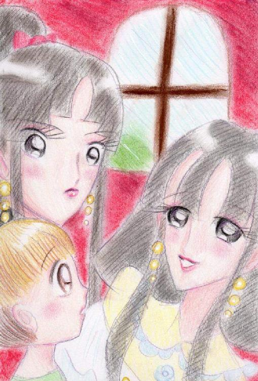

| 光の月闇の星物語 | |
| 月夜野スミレ | |
| tukiyonosumire (2013) | |
作 月夜野スミレ
神秘の世界ニギルムニ。星と月を模（かたど）った大地が広がる世界。
この世界は四人の神が治める。東の神ネーサ、西の神ジーナ、南の神チョウナー、北の神サンナー。
中でもただ一人の女性神、東の神ネーサが最高神とされ最も崇められていた。四神は姉弟神である。
四神の加護を受けニギルムニは平和に時を刻んでいた。
だがいつの頃からか、四神の間に争いが生まれた。四神は東南と西北に分かれて争うようになった。
やがて時は流れ・・・・・
序章 光の巫女、闇の神官
全てが闇と光で二分されている世界。その、ある、東南の光の国の片隅に、小さな教団があった。教団には小さな巫女の少女がいた。
年のころは十五、六で、短い黒髪をうなじに向けて全て撫で付け、少年を思わせる凛々しく、美しい少女だ。眉や瞳も力強い。性格や言動も少年のようで、武術が趣味で、その腕前は優れていた。
「この教団の巫女はそうあるべき。」少女はそれに従って生きている。少女は、武術のことは本当に好きだったが、本当は、まるで男の子の様な自分の容姿が好きではなかった。
彼女は近々、教団の祭司に上がることが決定していた。少女は皆に敬われていた。だが、少女の心は孤独だった。
祭司に上がれば一生を教団内で神に仕え終わるのだろう。この孤独は消えることは無く。
少女は祭司に上がり、自由を奪われる前にと、最近は目下、暇さえあれば、近くの野山を馬で駆け巡り過ごしていた。迷いを振り切るように。彼女は、巫女とは言っても、武術に長けているだけで、何の力も持ち合わせていなかった。元は辺境の貧しい農村の生まれで、光の血脈のなんでもない。
そんなある日、少女が乗馬から帰ってみると、教団施設の中に見慣れない背の高い男がいた。真っ黒な闇のような服を着ている。少女はそんなものは始めてみた。教団内には白い服の者しかいない。少女の存在に気付くと、男と話していた一人の神官が男に少女に挨拶をさせた。
黒い髪、同じ髪型、男が振り向く。何故か懐かしい。「何者だ？！」少女は巫女としての威厳を精一杯発揮し、強い口調で聞いた。だが、男は怯むことなく真っ直ぐに応えた。
「・・・・・闇の神官、マーダー。」
・・・・闇の神官、マーダー。・・・・闇の神官、マーダー。・・・闇の神官、マーダー・・・・。その言葉が少女の胸の中に響き、頭の中をぐるぐる回った。・・・・・（闇の者？！何故ここに？！！）
「私はこのたび新しく創設されることになった闇の神殿に仕える者、覚えめでたき、この神殿の事を学ばせて頂こうと、闇の神殿よりつかわされ、参りました。」
親善大使のようなものか、このところ、激しい光と闇の抗争は小康状態となり、友好、調和が尊ばれている。
「マーダー殿は優れた戦士でもあるそうです。巫女様、武術をご指南いただいたらどうですか？巫女様は武術がお好きだから。」神官たちが笑顔で話しかけてくるのも耳に入らない。少女は上の空で答えた。マーダーの静かな表情を見つめたまま、
「ん、ああ、・・・・そうしてもらおうか。」
「・・・・・貴方がお望みになられるなら・・・・・。」
マーダーは紳士の様にひざまずいた。その尊い姿が少女の胸に強く焼きつく。どうしたことか、この闇の男しか目に入らない。
それから、少女はマーダーと何度も立ち合い、話をし、武術を教わって過ごした。マーダーは本当に優れた戦士で、動きに無駄が無く、寡黙で物静かだったが、笑顔はとても優しい。（好きになってしまいそう。）こんなに楽しいのは随分久しぶりだった。
だが、少女はその分悲しくなった。より孤独になった。
（マーダーと別れるのが辛い。祭司になりたくない。）

少女は教団内にある神を讃える為のいくつかの水路にこっそり造ってある石造りの秘密の部屋に入った。
ここでだけは、いつも本当の自分自身に戻れる。少女だけの小さな部屋は、彼女の手で綺麗な布と花だけで質素に飾られ、彼女が唯一の友としてきた美しい人形達が座っている。少女はその部屋の中では、いつもとはうってかわり、小さく、とても弱弱しく見えた。少女は人形一つ一つに話しかけた。
「貴方の目はサファイアのようね。とても綺麗。」
・・・・・・私と全然違うわ。
「貴方の唇はまるで、さくらんぼ。」
・・・・・・・とっても女の子らしくて可愛い。
「どうしてそんなに美しい髪をしているの？翡翠みたいだわ。私も、貴方達のような姿だったら。」
・・・・・・・・・マーダーの心を手に出来るかしら。
こんな姿は他の者には決して見せられない。こんな弱い姿は・・・・。巫女はいつも強くあるべき、凛々しくあるべき、普通の少女の様に人形と戯れる事なんて許されない。
「・・・・・人形に生まれれば良かった。」こうして、生きていても人形と変わらないのに。私はずっと教団の為の人形だわ。それ以外にはなれない。決して。少女は泣いた。
少女はしばらく、秘密の子部屋で一人臥していた。
「そろそろお戯れは慎んでいただきたいですな。巫女様。」不意に声をかけられ少女は、ハッと身を起こした。白い服の初老の男が立っていた。
「神官長・・・・・」少女は思わず後ずさった。
彼は現在、少女に次ぐ地位の持ち主で、事実上、教団の王者だった。少女も、彼には逆らえない。
「・・・・こ、ここへは誰の立ち入りも許してはいない。誰の権利を得て！！」
少女は精一杯声を張り上げたが、声がおのずと上ずるのを止められはしなかった。少女はこの男が大嫌いだった。教団内の地位を利用して私服を肥やす、過剰な税を取り立て、か弱い平民の人々を平気で苦しめる。人当たりのいい風貌はしているが中身は真っ黒だ。神官長はニッコリと微笑むと言った。
「・・・・また、このように教団の資金で人形など買い集められて、いけませんなあ。教団の資金をお一人で私的に使われては・・・・・・・困るのですよ。巫女様。巫女たる方がその様にいつまでも、人形と戯れたり、闇の神官と必要以上に親しまれたりしますと！！・・・・他の者へ示しが付きません。」
「わっ私がいつそんな事を！！」
少女は顔を真っ赤にして、声を張り上げた。
「ならば、これはなんだというのです。この人形一つ一つは特注品、珍しい、決して安くは無いものばかりです。こんな役にも立たぬガラクタに金をかけられては困るのです。」神官長は無情に人形達を示した。少女は言葉を失った。
「さらに言うのなら、この小部屋は？我が教団の力で作られたもの、貴方はそれを私的に利用しておられる。それを知ったら他の者はどう思うでしょう。」
少女の身体は小刻みに震えつつあった。
「・・・・っ！！お前にそんな事が言えた義理か！私は知っているぞ。お前こそ散々教団の資金を懐に入れて好き放題しているではないか。先ほど屋敷を新築したと聞いた。その資金はどこから出ているんだ。それに比べれば私など可愛いものではないか、私は自分の範疇を超える金を、お前のように教団から奪い取ったことなど無いわ！！」
神官長の笑顔がぴたりと凍りついた。少女は思わず息を呑んだ。次の瞬間、神官長の顔から笑顔は消え、表情は一変した。
「小娘が！！いつから私にそんな口を聞ける立場になった！！！お前を拾い、ここまで仕立て上げてやったのは誰だと思っている！」神官長は少女の短い髪を乱暴につかむと、少女の身体を床に叩きつけた。少女は悲鳴を上げて身体を縮込めた。
「何の価値も無い、女としても不十分な、ただの小娘のお前を、巫女の地位につけてやったのはこの私だ！何の力も能も持たない、お前をわざわざもらってきたのはこの時の為だ。お前の魂に含有する光が、馬鹿な民衆達を魅惑する我が教団の象徴に相応しいからだ。ただそれだけのことだ。何の為だと思っている。それもこれも全て私の地位を揺るぎ無いものにする為だ！お前はその為だけに生きているんだ！ここに居るんだ！！・・・・・それを！！いつまでも、人形と戯れ、闇の神官に入れあげるなど！」
あまりの恐怖に、少女は子供の様に怯え、泣いた。神官長はそれにも構わず少女に怒鳴りつけながら、少女の身体を何度も乱暴に蹴った。
「ふざけるのも大概にしろ！・・・・やっとの事で、もうすぐ、お前は真の祭司の地位につき、私は頂点を極めるというのに。そんな事では困るんだよ、身分をわきまえろ！私の恩を忘れたのか！忘れたとは言わせないぞ！！！」
蹴りを加えられ、少女は何度も悲鳴を上げても、逆らう事が出来なかった。力で、言葉で、神官長には逆らえないよう、幼い頃から教育されてきたからだ。
そんな事の為に、私はたった一人の弟とも引き離された。もう彼の顔も思い出せない。少女は改めて、自分の孤独を思った。・・・・・・誰か・・・・・・助けて・・・・・！
「やめろ！！」小部屋の中に良く通る強い声が響いた。少女も激昂した神官長もぴたりと、思わず動きを止めた。（・・・・マーダー）光を背に受け、そこには闇の神官が立っていた。
「・・・・・神官が巫女に暴力を振るうなど、許されない。尊い巫女様に乱暴をするな。教団の評判を落としてもいいのか。私がこの事を上に報告すれば、この教団はただですまないだろう。」
「っっ・・・・・黙れ！闇の者が！お前の言う事など誰が信じようか。この世で正しいのは光のみだ。邪悪なお前達の言葉など聴衆は信じまい。」
「・・・・・いくら闇の者の言う事とは言え、真実は必ず明るみになる。腐りきった神官よ。・・・・・光が正しくて闇が邪悪などと誰が決めた！どちらも使う者の心次第だ！！！」
揺るぎ無い、涼しい言葉だった。その言葉に、少女の心の中で何かの答えがもたらされた気がした。マーダーの真っ直ぐな言葉に、たじろぎ、神官長も舌打ちして少女から離れた。
マーダーはつかつかと少女に近づくと彼女を助けあげた。
「さあ行こう巫女様。今日も剣を交える約束だ。」
マーダーは少女の手を取り、振り返りもせず歩き出し闘技場へと導いた。少女はただ、ついていくのが精一杯だ。そして、神官長も、もう何も言わなかった。
闘技場へつき、体が傷ついているのも忘れて、二人で思う様に剣を交えていると心の全ての迷いが晴れる思いだった。激しく逆巻いていた心がたちまち静かになっていく。マーダー。不思議な男。
マーダーを愛している。私はこの教団を憎んでいる。それでも、祭司となる。これは運命だ。
剣を交えた後、二人は近くの草原で寝転がり、男同士のように話した。
「マーダー・・・・私は祭司になろうと思う。今までとても嫌だったのだけど、今も、とても嫌だけれど。こんな教団の祭司になる事が、何の力も持たない私が祭司になる事がとても嫌だったんだ。だけど、祭司になると、私はここらの光の力と一つになるという。
だから、私は、祭司になろうと思う。この教団を滅ぼす為に。この教団は光信仰の分化してきたものの最も末端にあると思う。だから本来の光の教義から反れ、間違った方向に進み始めている。こんな教団は無いほうがいいと私は思う。だから祭司となり、私が、幕を下ろす。・・・あの部屋も水に沈める。処分する。・・・・いいんだ。いつか、そうしようと思っていたのだから。・・・・・・・こんな風に思える様になれたのはお前と会えたからだ。・・・・・感謝する。」
マーダーは何も言わず、少女の言葉を黙って聴いていた。優しい瞳で。少女には、それだけで十分だった。
ついに少女が祭司に上がる日がやってきた。もうこれで、少女が教団の外で生きて行く事は無い。華やかな祭りが行われ、荘厳な儀式が執り行われた。指揮するのは神官長だ。マーダーは、いつの間にか姿を消していた。だが、この光の地にあって闇の神官が一人、消えたところで、誰も、気にする者は無かった。
少女は、円形に建造され、清らかな水の流れに囲まれた神殿の中央に立ち、この地にある光の力と一つになると、祈った。
大いなる光の力に向けて祈った。
（・・・・・・母なる光よ。・・・・・水脈よ。私の願いを聞き届けよ。この教団は・・・・・光とは名ばかり。地に落ちた。その存在はその名を汚すばかり。どうか、この教団に鉄槌を。私の命に代えて、滅びを、もたらしたまえ・・・・・。）
光が、遠くから、どこからか、少女に返事をしてくれた気がした。
（答えてくれた、解かってくれた、同調して下さるのか。）
少女は微笑んだ。
少女の祈りに答えるように、光が神殿中に閃光を走らせた刹那、神殿を包む水の流れがたちまち水位を上げ教団を飲み込み始めた。人々は悲鳴を上げて逃げ惑った。事の起こりを悟った神官長は怒り狂い叫び声を上げた。
神官長が剣を振り上げ迫ってくる、容赦なく上がる水位は少女の身体を飲み込んでいく。だが、少女は動かなかった。神官長の剣を胸に受けるにしても、水の底に没するとしても、ここで命を終える気だった。もう覚悟は決めていた。
あの闇の神官と出会った日のことが思い出される。
「・・・・・闇の神官、マーダー。」
彼が発した言葉は、今も、この胸に熱く刻み込まれている。彼と会えた。それだけで。・・・・・少女の心にもう心残りは無かった。
水に浸る少女に向けて、神官長は斬り付けた。少女はそれでも目を逸らさなかった。ふいに、神官長は絶叫し、倒れこんだ。辺りにぱっと鮮血が散る。少女は驚いて息を呑んだ。
そこにはマーダーがいた。彼の剣が神官長の血に染まっている。彼は無駄の無い動きで、素早く神官長を切り捨てると少女を水の中から引き上げた。
「・・・・・・どうして・・・・帰ってしまったのではなかったのか・・・・？」
もう、二度と会うことはないと思っていた。少女は上手く言葉が紡げなかった。マーダーは少女を抱き上げた。
「・・・・私は、本当は、我が闇の神殿の神官長様。貴方の弟君に申し付けられ、貴方を迎えに来たのです。」
「・・・・・馬鹿な。弟は闇の者ではなかった筈・・・・」
「・・・・弟君、私の主は、貴方を奪われた悲しみで光を憎み、闇に祈られた。すると闇が彼をお救いになったのです。弟君は闇の洗礼を受けられ、力を得られ、神殿を立ち上げ、頂点に立たれた。貴方をいつか救い出す為に。」
「そんな・・・・・、そんなことがあるのか・・・・・？」
闇がそんなに優しいなんて。
「・・・・言ったでしょう。光も闇も、それを使う者の心次第。一緒に闇の国へ行きましょう。そして、貴方も闇の洗礼を受けられよ。・・・・・・私と生きてください。」
「マーダー・・・・・！！」少女は闇の神官を抱きしめた。
こうして、ひとつの光の教団が滅び、ひとつの闇の教団は大変な繁栄を遂げた。
光の巫女である少女と、闇の神官マーダー。この二人の「出会い」が、この「出来事」が。
やがて闇の増長を引き起こし、光と闇の世界、全てに終焉をもたらす事になるとは・・・・、それが全て、闇の邪神の企みであったなど。
この時は、まだ。・・・・・・・誰も知らない。 序章 完
第一章
ニギルムニの大地は、東南は光の、西北は闇の大地と呼ばれるようになった。
神々は二つに分かれてしまったのだ。
だが、それでも二つに分かれてもニギルムニは静かに時を刻んでいた。しかし・・・・・・
今この世界の北の大地、キシヤパトポオで重大な異変が起こっていた。古より伝わる邪神サンナーが邪悪な魔王の手により復活したのだ。
ここは雪と氷に閉ざされた不毛の大地。そこへそびえる吹雪に閉ざされた氷の城。闇の城。それは、青く、暗く、城内は静寂に満ちていた。その地下の神殿から響き渡る恐ろしい笑い声。
「おお、我らが主よ、偉大なるサンナーよ・・・・」
厚い荘厳なローブを着た女は紫の長い髪をなびかせ邪悪な影に向かって囁いた。彼女の肌は透けるように白い、その瞳は灰色に淀んでいた。
「ぐふふふ・・・・黒魔導師アースエラよ、クムチヤナの王よ！
良く我を蘇らせた。お前の望みは全て叶うであろう・・・」
アースエラの体を黒い瘴気が覆う。すると、みるみるアースエラの肉体に力がみなぎった。
「ははっありがたき幸せ」
アースエラは頬を高揚させ、歓喜の表情を浮かべた。
「ククク・・・それには手始めに、ニギルムニ全てを恐怖のどん底に貶めてくれよう！！」
「もちろんでございます！楽しみにお待ちください！サンナー様！」
両腕を広げ笑うアースエラ。その背後に巨大などす黒い影が黒々と湧き立ち上がり、
ニイッと光る目を歪ませた。
こうして北の国キシヤパトポオは世界にその牙を剥いたのであった。
その時南の地、クムチヤナに住む大魔導師マスター・モーリーは、何か不吉な影を感じ取った。
空を見上げ佇む、理知的な輝きを瞳に宿した、長い髭の老人。彼は厳しい表情で言った。
「この波動は・・・・不吉な、何かが・・・起ころうとしている・・・・・」
彼の緑のローブが風にたなびく。南の空に大きな星が流れた。
世界には二つの力があった。その力を持つ者が世界を維持していた。それは光と闇と呼ばれていた。
世界は光と闇の魔力に覆われ、それが世界を作り、そしてそこにいる人々を二分していた。
東南は光の大地、西北は闇の大地として。完璧に二分された二つの大地。
光の地、闇の地、その二つを行き来するのは特に力を持たない一部の者達だけだった。
光と闇は決して相容れない。お互いに監視し合い、反発している様な所があった。
しかし、世界の維持には相反する二つの力の存在が絶対不可欠。だが、今その秩序をクムチヤナの王アースエラは破ろうとしていた。
世界一の大国、光の国、東の地ソホブイ。ここは緑あふれ花々が咲き乱れる平和な、美しい王国。
立ち並ぶ建物のどれもこれもピカピカと輝いている。その中で一段と際立つ真珠色の城。
今まさにここで奇跡の姫君と名高いプリニハスの十二歳の誕生日を祝う宴が開かれていた。
沢山の花が振りまかれ、豪勢な御馳走が国民達に振舞われ大層華やかな宴だった。
城内は幸せと笑顔で包まれていた。
「おめでとうございます、姫君」
「おめでとうございます」
わーーーーー・・・歓声が国を包み込んだ。
「ありがとう、皆さん・・・・」
プリニハスは柔らかい金の髪を揺らしその青い瞳に輝くばかりの微笑を浮かべた。
幸せに包まれた光の国ソホブイ。
だがその幸福はたやすく破られた。
空を覆う、氷のモンスター達の群れ、ソホブイは大きな影に覆われた。
「はっ！あれは氷竜？！北のモンスターが何故ここに？！」
青黒い氷竜の背中から邪将軍リン・グが不気味な薄笑いを浮かべる。
厳つい鎧でその身を包んだ邪悪な女。褐色の肌、豊かなペールピンクの髪。鎧兜の中で孔雀色の瞳がぎらぎらと輝く。その表情は優越感に満ちていた。
彼女は主人のアースエラより、邪神サンナーの魔力を分け与えられておりその力を増していたのだ。この世界に我が主以外私に敵う者は無い。彼女はそう思っていた。
「聞け！愚民共よ！この世界は今日より我らキシヤパトポオが支配する！
手始めに光の姫君頂いていくぞ！！」
宴のため用意されたご馳走や花が床に散った。巻き上がる人々の悲鳴。
「きゃあああ！」
邪将軍リン・グはプリニハスをさらい、魔剣を振り雷を呼ぶ。城は雷に打ち砕かれた。そして、光の姫を失いソホブイは光を失った。
狩人ライヤーはいつもの森で鹿を狩っていた。ライヤーは年若い、だが腕のいい狩人だ。濃いマロンの髪にブラウンの瞳が優しく、思慮深い雰囲気を醸し出している。ソホブイ出身だが、彼の一族は代々特に光の力は持たない。
世界人口の約半分の人間は何も力を持たない。ライヤーは気ままに世界中を光の地、闇の地関係なくあちこち狩りをし、旅をして生活していた。
一匹の犬が鹿を追い詰める。ライヤーは弓の弦を静かに引き、狙いを定める。
矢が空気を切って飛び鹿に命中した。
「ようし、仕留めたぞ！クロッキー良くやった。」
茶色の愛犬のクロッキーの頭を撫ぜてやる。
クロッキーはへっへっと嬉しそうにライヤーに鼻をすり寄せた。ライヤーも笑った。
ここはソホブイの外れの森。ライヤーのお気に入りの猟場だった。
「一休みしよう、クロッキーおいで。」
ライヤーは樫の木の根元に腰掛け、手作りの横笛を取り出し奏で始めた。クロッキーは横で寝そべり寛（くつろ）いでいる。森に美しい音色が響く。
ふと、ライヤーは妙な空気に演奏をやめた。不意にクロッキーが空を見上げ唸り声をあげ始める。
鳥達が何かに怯える様に飛び去っていく。
「森が騒いでる？何だ！」
ライヤーはクロッキーを連れ、森が開けたところまでやってきた。急に冷気が漂う。そして空を見上げると！モンスターの大群が北に向かって黒い大蛇のようにうねって流れていく。
「なぜ氷竜がこんな暖かい所に・・・・」
それはよく北で見かける氷の息を吐く恐ろしい竜の一種だ。ライヤーが戸惑っていると、
「いやああああ！」少女の悲鳴が聞こえた。
頭の上をプリニハスをさらっていく氷竜が過ぎようとしていた。
ライヤーは反射的に矢を放つ。矢は心の臓に命中した。絶叫を上げて落下してくる氷の怪物。そして、少女が振り落とされ宙に舞った。
「クロッキー！！」ライヤーは大きな声で号令をかけた。
クロッキーは跳び、少女を受け止めた。
「大丈夫か？おい！」幼い少女は恐怖のあまり気を失っていた。
クロッキーが唸る。空には氷竜がライヤー達を中心に旋回している。
すごい殺気だ！
「ブルーン来い！！」
ピューーーーー。ライヤーは鋭い口笛を吹き栗毛色の愛馬を呼んだ。
少女を抱え軽やかに跨（またが）る。そして風のように走り出した。森の木の葉や小枝が頬をたたく。
氷竜たちが殺到し氷の息を吹きかける。
ライヤーは馬の手綱を携え、巧みに操り避ける。森が凍りつき音を立てて砕けた。
森を縫うように駆け弓を射る。数匹の竜が地面に転がる。
一度で数発の矢を放ったのだ。のたうつ仲間に竜達が群がり貪り尽くす。終わった後は何事も無かったように追撃を始める。氷竜が恐れられるのはこの貪欲さと凶暴さである。ライヤーが捕まればたちまち同じ末路を辿るだろう。
ライヤーは怯むことなく矢を雨のように撃ち続ける。しかし一日で一万千里飛び、青い空を青黒く塗り潰すほどの大群の飛竜の群れに対してさほど効果が無かった。その差をじりじりと狭められる。
「ブルーン、クロッキー頑張れ！もう少しでプサオコノの洞窟だ！」
その洞窟の中では湯が湧いており、氷竜達が入ろうものなら溶けてしまうのである。
背後に粘液を滴らせた氷竜の口元が迫る！もう少しでその牙が彼らを呑み込みそうだ。
しかし、間一髪プサオコノの洞窟へ飛び込んだ。彼等の勢いに熱い蒸気が噴き出す。
熱い蒸気が氷竜達に吹きかかると、たちまちその皮膚を爛れさせた。氷と魔力で生み出された彼らは熱にとても弱いのだ。
ぐあああああっ
氷の化け物たちは身をよじって苦しみ、地面をのたうった。辺りに激しい轟音が響き噴煙が立ち上った。まともに蒸気を浴びた一頭の竜は地面に倒れこみヒクヒクと痙攣をしていた。が、やがて動かなくなりドロドロと溶け、消えた。それでも彼らはライヤー達の後を追おうとしていたが熱い蒸気がそれを阻んだ。
竜達は恨めしそうに洞窟の周りを旋回していたが、やがて去った。
「何とか助かったか・・・」ライヤー達は温かい温泉に足を浸しながら、冷たい汗を拭った。
ライヤーはブルーンに少女を乗せて奥へ進んでいく。その後をクロッキーが鼻を鳴らしながらついて行く。
中は深く、入り組んでいる。いくつかある別の出口を利用しよう。まだ氷竜が近くをうろついているかも知れない。
ライヤーはそう考え、温泉が張り、湿った洞窟内を歩いた。
ライヤーはブルーンの背中の上で揺れる、気を失ったままの少女を心配そうに見た。
それに気付いた様に少女がピクリと動いた。
「ん・・・・」ゆっくりと目を開ける。
「きゃあっ！」少女は怯えの表情を見せた。
無理も無い、氷竜にさらわれてきたんだ。どんな酷い目にあったことか・・・・
ライヤーはできるだけ優しい声で話しかけた。
「だいじょうぶ、俺はライヤー。ただの狩人だ。君は氷竜にさらわれてきたんだ。覚えてるかい？」
少女は辺りをきょときょとと見回し、自分を乗せているブルーンや、
その足元で鼻を鳴らすクロッキーを見た。少し安心したのか表情を緩めた。
「貴方が助けてくださったのですね・・・」少し微笑んだ。
見たことの無いような美しい少女だ。ふわふわの髪がけぶるようだ。
ふと少女が何かに気付いた様にライヤーに手を伸ばした。ライヤーが躊躇していると少女はライヤーの頬に触れた。
「傷が・・・」森を駆け抜けたとき小枝や葉で傷つけたのだろう。ライヤーがそう考えているとほんのり少女の手が振れたところが暖かくなった気がした。不思議な光が現れ少女の体の周りをくるくる回った。その光はライヤーの頬に集まり優しいぬくもりを放った。
少女が手を離すとライヤーの傷は跡形もなく消え去っていた。
「私にはこんな事しかできませんが。ありがとうございます。ライヤー様。私はソホブイのプリニハス。貴方に命を救われました」
不思議な光に包まれたプリニハスは幼いながらも、冒しがたい気品に満ちていた。
この娘は光の尊い家柄の娘なのかもしれない。ライヤーは畏敬の念のようなものを感じた。
プリニハスを乗せたブルーンの手綱を引きしばらく歩くと洞窟の出口に辿り着いた。注意深く辺りの様子を探る。近くに氷竜はいないようだ。
「念には念を入れて森が深い所を選んで歩こう。ソホブイからは大分離れてしまったが、
二、三日あれば辿り着くはずだ」
ライヤーの言葉にプリニハスは驚いたような表情を浮かべた。
「これ以上ご迷惑をかける訳には行きません。ここからは私一人で・・・・」
困ったような顔をするプリニハスにライヤーは笑って言った。
「こんな距離を女の子一人で無理に決まっているだろう。俺もソホブイへ向かう予定だったんだ。
ついでだから送って行くよ」
「ライヤー様・・・・」・・・・・・・・ありがとうございます。
プリニハスはライヤーの心優しさに胸を打たれた。しかし自分を狙うクムチヤナの軍勢のことを思い、この親切な狩人を危険な目に合わせてしまうのでは・・・・と胸を痛めた。
その杞憂は当たっていた。
プリニハスを思いもよらぬ形で見失ったクムチヤナの邪将軍リン・グと氷竜達は歯噛みしていた。
たかが一介の狩人にしてやられるなんて。リン・グの自尊心は著しく傷つけられていた。
辛くも取り逃がした間抜けな氷竜達にも腹が立つ。所詮は魔力の作り物か。
リン・グは怒りに任せて数頭の氷竜を魔剣で切り裂いた。残りの氷竜達は恐怖の叫び声をあげた。
「そう猛るな、リン・グ・・・・・」空から女の声が響いた。
近くの黒々とした暗雲に女の目、鼻、口が現れ、アースエラの顔を形作った。その顔のワインカラーの唇が動き言葉を作る。
「可愛い妹や、安心おし。あれだけの光だ、見つけるのはたやすかろう。早う見つけにお行き」
魔王アースエラはリン・グを可愛がっていた。まるで実の妹のように・・・・・
リン・グもそれに答えた。二人の絆は常軌を逸したものであった。
「ええ、分かりましたわ。お姉さま。私のアースエラ。貴方のため今度こそ光の姫君手に入れて見せましょう。」
リン・グはうっとりとした熱に浮かされたような瞳で暗雲に映ったアースエラの顔を見つめ答えた。
「ええ、ええ、そして早く私の元へ帰っておいで。ただし分かっているわね。次はこのような失態許さない。・・・・・・光の姫君を見つけたら、殺しなさい。確実に。そうしてその魂、持ってお帰り」
「ええ、もちろんそういたしますわ。お姉さま。貴方のため、光の姫君を手にかける大罪
喜んでこの身に受けましょう。それが貴方の望みならば・・・・！」
「おお、リン・グ！可愛いこと、早くもう一度貴方をこの腕で抱きしめたいわ。
ならばお行き、急いでお行き。私の望みをかなえておくれ」
「はい、お姉さま」二人は見つめ合い微笑んだ。
「ただひとつお許しいただけますか？」
「どんなこと？」
「私に恥を掻かせたあの嫌な狩人。八つ裂きにさせてくださいな」
「そんなこと！望みどおりしなさいな。貴方の気が済むように」
「ああ、ありがとうございます。お姉さま」
くくくく、あははは・・・・
闇の魔女達の邪悪な笑い声が空いっぱいに広がっていった。
雨雲が広がっていく。あたりが薄暗くなってきた。
「降りそうだな、今日はここらで休もう。こんなに急に天気が変わるなんて、この辺りでは珍しいな」ライヤーはプリニハスの手をとって木陰へ案内しながら言った。
「闇が、力を強めているのです。光と闇のバランスが崩れ始めてる・・・・」
早く国に帰り光を送らなくては。このままでは世界がたわみ、壊れてしまう。
口には出さなかったがプリニハスは大きな脅威を感じ取り心収まらなかった。
そんな彼女の影をライヤーは何とはなしに感じ取っていた。彼女は何かに急かされている。事情があるのだろう。だが今は・・・・
「疲れただろう、プリニハス。今何か食べるものを見つけてくるから・・・・」
ゆっくり休めよ、先はまだ長いんだ。そんな意味を含んだ言葉を投げかけると、ライヤーはブルーンとクロッキーに留守を任せて森に向かった。
「優しいお方・・・・」
ライヤーは深くは聞かなかった。人のことをあれこれ詮索する主義ではないのだ。彼女はただ闇の軍勢に狙われている少女、それだけで守る理由は十分だ。そう言いた気だった。プリニハスは心が清められるような思いがした。なんと気高い心。すべての人があのような心持だったら世界は乱れないのに。
だが、闇もまた人の心。欠くことのできない真実。光はその力に勝てるだろうか。
プリニハスはクロッキーの背中を撫ぜ細かい雨の降り出した暗い空を見上げた。近くの草をブルーンが尻尾を揺らして食んでいる。
だが光も消えることはない、「そう信じたい」プリニハスは自分の中にある、今まさに闇に食い尽くされようとしている光に向かって祈った。それほど闇は力を増していた。光が覆い尽くされていく。それは恐ろしい真実だった。
すっかり本降りになり、小一時間ほどたった頃、ライヤーは帰ってきた。見事なウサギを携えて。
ライヤーは火を起こし、その皮を剥ぎ、内臓を取り出し、切り分け、持っていた岩塩を砕いてふりかけ火にくべた。
そういうことを初めて見たのだろう。プリニハスは最初おっかなびっくり遠巻きにその様子を見ていた。だが肉が香ばしい匂いを放ち始めるとそばにより興味深そうに見入った。
ライヤーはその様子になんとなく吹き出してしまった。
二人は肉を食べ、近くの小川で汲んだ水を飲みその夜は休んだ。
次の日の朝、ライヤーはプリニハスのために甘い木の実を見つけてきてくれた。
プリニハスはとても喜んだ。目覚めてばかりの渇いた喉には本当にうれしい食べ物だった。
二人は木の実と昨日の残りの冷えた肉を食べ、出発した。
渓谷を抜け、深い深い、昼なお暗い森を選んで歩いた。その方が上空から発見されにくいだろう。
しかし漂うほのかな闇はプリニハスの不安を誘った。
｢大丈夫、俺がついてるよ。それに彼らもね｣
ライヤーはプリニハスを乗せて澄ましているブルーンと足下で二人を見上げるクロッキーを肩で示した。クロッキーは元気にワンワンと吠えた。
｢それにこうゆう森には精霊が沢山住んでいるものだよ。｣
｢精霊？｣
｢そう、だから心細く思うことなんか無いよ｣
そのとき森の奥から清らかな歌声が沢山聞こえてきた。木の枝や洞に淡い光を纏った美しい人々が腰掛け歌っている。彼らの体は背後の景色が見えるほど薄く透き通っていた。
｢精霊が？こんなに沢山人の前に現れるなんて！｣ライヤーは驚いた。こんなことは初めてだ。
美しい精霊の姿にプリニハスはうっとりとして言った。
｢歓迎してくれているのよ｣
｢歓迎？｣
｢ええ、森中が歌っている｣
歌声は森中に広がっていった。大きな大合唱。だがそれは不思議なことに少しも耳障りではなかった。ライヤーの知っている限り精霊達が姿を見せることはあっても、こんなに好意的に接してくることなど見たことなど無かった。それが歌で歓迎し、今一人の少女の周りをくるくると回っている。
精霊が人に慣れるなんて・・・不思議な子だ、まるで噂に聞く光の姫君のようだ・・・・・
ライヤーは精霊と楽しそうに戯れているプリニハスに見とれながらそう思った。
｢綺麗だ・・・・｣
｢どうしたんですか？ライヤーさん｣
真っ直ぐに見つめる蒼い瞳、美しく儚い光・・・・慌てて目をそらすライヤー。
｢いや、なんでもない｣不思議そうに首を傾げるプリニハス。
一人の精霊が微笑んでふわりとプリニハスの元へ降りてきた。そして白い花をひとつ渡した。
プリニハスはそれを胸に抱きしめた。
｢こうして、誰かに受け入れてもらえるだけで力が湧いてくるものですね・・・行きましょう｣
プリニハスは強い瞳で言うと自らブルーンの手綱をとり前に進んだ。ライヤーも頷いて歩き出した。
クロッキーが尻尾を振ってその後へ続いた。
良く見ればあちこちに小さな花が咲き精霊は微笑み歌いさざめいている。
二人は精霊の歌声響く森の中を楽しく歩いた。森に響く歌声は旅の不安や心細さを拭い去ってくれるようだった。小川を渡り、倒れた大木を乗り越え、重なる木々の間を縫うように歩く。時々方位を間違えないように磁石を見た。だがそれはほとんど必要なかった。
精霊たちは彼らが迷わないよう気遣い、その歌声で誘（いざな）ってくれていたのだ。
おかげで彼らの進む足も軽くなった。二人は旅をする合間いろいろなことを話した。
やがて夜がやってくる。二人は大きな木の洞に宿を取った。精霊達は歌う歌を夜にふさわしい静かな歌に変えてくれた。
今夜もライヤーは見事な獲物を捕らえてきた。プリニハスはそれを無邪気に出迎えた。クロッキーもご馳走の登場を歓迎している。二人も幸せだった。
二頭の友に囲まれ二人は楽しく食事をした。そこにはいつの間にか不思議な「和」ができていた。まるで仲のいい兄妹のようだった。まだ出会って二、三日しか経っていないというのに、ライヤーはプリニハスを愛おしく思った
必ず無事国元へ返してあげたい。いや、そうしよう。ライヤーは深く決意していた。
またプリニハスもそんな若者の事を深く信頼したようだ。彼女はライヤーに自分の事を色々話した。ライヤーも旅先であったいろいろな出来事について話してあげた。プリニハスは楽しそうに笑った。闇の者にさらわれ思いがけず出た、不安なはずの外の世界でプリニハスがこんなに安らぐ事ができたのは、きっとライヤーのおかげだろう。
心地よい静かな精霊の歌声流れる森で、プリニハスはライヤーが枯れ草などで器用に作ってくれた寝床に包まりながらひっそりと話す。
｢私はずっと自分の国から出ること無く育ちました。私には大事なお役目があったから。少し同じ年頃の少女達とは違った生活だったかもしれません｣
｢私の役目はわが国ソホブイに在り、世界へ光の魔力を滞りなく送り出すこと。私の魂は生まれつき光の魔力と共に在るのです。｣
｢だからずっと城で暮らしていました。色々不自由はあったけれど、私は恵まれていたと思います。私は光を通して世界中のあらゆる光り輝くもの、優しいものを知ることができたから。私は幸せでした。｣
「周りの者は皆とても優しかったし、母も側に居ました。母は大好き。いつもちょっとした事でよく喧嘩をしてしまいましたけど。でも本当は誰より一番好き」
「母にもこの森や精霊達の大合唱を見せたいわ。私は彼らの存在は知っていたけれど、会ったのは始めて。知っているだけの事と、本当に出会うって事はこんなにも違うんですもの」
ライヤーは黙って頷きながらそれを聞いた。回りは夜を彩る精霊達の纏（まと）う淡い光でいっぱいで
優しくほのかなその光はため息が出るほど美しかった。
ライヤーは薄々気付き始めていた。
この少女がただの少女ではないこと。世界中、獲物を追って旅を続けてきたただの狩人の自分とは住む世界の違う少女。重大な意味と役目を背負った少女。しかしそれゆえに狙われ、追われていることを・・・・・・。
「私しゃべりすぎですね。お耳に触ったのではありませんか？」
夢中で話していたプリニハスは急に我に帰ったのか、恥ずかしそうに布団代わりにしているライヤーのマントに顔を隠した。
｢そんなことは無い。それより、また違う歌が始まるみたいだよ｣
優しいライヤーの言葉にプリニハスは耳を済ませた。精霊たちは歌い始めた。
それはまるで子守唄のようだった。美しい歌声。精霊はその姿や歌声だけでなく、心も美しいに違いない、プリニハスは思いやがて静かな寝息を立て始めた。クロッキーやブルーンも気持ちよさそうに眠っている。ライヤーはそれを見て微笑み横笛を取り出した。そして、精霊たちの歌声に合わせて静かに奏でる。プリニハスは精霊たちの歌声とライヤーの笛の音に守られながら眠りについた。
次の日精霊の森の中小川に水を飲みに来たプリニハスは一人天を仰いでいた。
彼女の周りにはまた不思議な光が現れくるくるとその身の回りを回っていた。森には精霊の歌声が響いている。
｢まだ、まだ大丈夫。これならまだ希望がある。早くソホブイに戻り、元通り光を・・・・・｣
破られた闇と光の秩序に安定を・・・・。そう思った、その時だった。森に大きなどよめきが走った。精霊たちの清らかな歌声が悲鳴に変わっていく。あの人たちが来た！プリニハスの心に恐怖が浮かんだ。小さく体が震えてくる。プリニハスはライヤーたちの元へ走った。怖い、心細い、会いたい！
｢ライヤーさーーんっ｣
｢プリニハス！｣
茂みの間から慕わしい顔が飛び出した。異変を感じ取ったライヤーも急いで駆けつけてきたのだ。プリニハスはライヤーの顔を見ると、飛びついた。
ライヤーはプリニハスを抱きしめると、
｢ここは危ない、早く移動しよう！｣と、プリニハスをブルーンに乗せた。
だが遅かった。空を黒い影が覆った。氷竜の群れだ！一頭の氷竜の上から恐ろしい女の声が響いた。厳つい鎧に身を包んだ魔王の下僕。褐色の肌。闇を纏い憎しみで目を血走らせた女。
｢それは困るね、お二人さん！お前達にはここで死んでもらうのだから！｣
邪将軍リン・グだった。彼女は長い髪をたなびかせて唇をゆがませた。
｢特に貴様！狩人！よくも私に恥をかかせてくれたな。ただでは殺さん！｣
辺りに激しい殺気が散った。ブルーンが怯えて盛んにタタラを踏んでいる。
クロッキーが空に向かって唸った。続けざまに激しく吠える。リン・グは忌々しそうに一瞥した。
｢うるさい！駄犬ごときが、主人を守ろうとでも言うのか！身の程を知れ！｣
リン・グは叫ぶと魔剣を振るった。激しい剣撃がクロッキーを吹き飛ばした。
｢ぎゃんっ！｣
クロッキーは地面に叩き付けられ悲鳴をあげると、それきり動かなくなった。
｢クロッキー！｣
ライヤーは弓を取ると凄まじい勢いで矢を放った。邪将軍リン・グはそれを笑ってこともなげに薙ぎ払う。
｢この程度か、失望したな。ますます私を怒らせたようだね。狩人｣
氷竜たちが恐ろしい叫びを上げる。数頭の竜が地上に降り立った。
竜たちはクロッキーの体に群がってその体を食み始めた。
｢やめろおおっ！｣
ライヤーは目を血走らせ狂ったように数発の矢を同時に放った。数頭の氷竜が倒れる。
｢少しはやる気になったようだな｣リン・グは楽しそうに笑った。
仲間を倒された氷竜たちは怒り狂い憎しみの声を上げた。そしてその怒りに任せて氷の息を森中に吹きかける。木々が凍り砕け散っていく。精霊たちの悲鳴と断末魔が響いた。
｢ひどい！なんてひどいことを！｣プリニハスの瞳から涙が零れ落ちた。
恐ろしい。人の憎しみの心。闇の心。醜い、とても醜い姿。怖い。だがそれはあらわにされた臓物のように今目の前に確かに存在していた。
プリニハスはその場から動けなかった。
リン・グとライヤーの間に。怒り狂う氷竜たちから。彼らから闇があふれ空気へ溶け森に広がっていく。飲み込んでいく。
｢さて、少し遊んでもらおうか｣
リン・グは魔剣の先に闇の雷をほとばしらせた。それを細く細く絞りライヤーの上に雨のように降らせる。
｢くっ｣ライヤーは地面を転がるように雷の雨をかいくぐる。
だがとても避けきれるものではない。いくつかの雷がライヤーを打ちその体から血を滴らせた。
｢あっはっは！最初の一発で死ななかったのは褒めてやる！だが次はどうかな！｣
さらに雷の雨を降らせる。ライヤーの体の傷はさらに増えた。
｢つうっ！｣
｢アーーハハハハ｣
なぶり殺しにする気だ。このままでは二人ともやられてしまう。プリニハスの故郷はもうすぐそこだというのに。せめて彼女だけは生かさなくては。ライヤーは一瞬の隙をついて四方に矢を放った。二頭の氷竜が倒れる。
｢馬鹿がそんなものが効くと思うのか！｣リングは矢を払いのけた
だが狙いはそれではなかった。ライヤーはプリニハスを乗せて恐怖で嘶（いなな）き続けているブルーンに走りよった。そしてプリニハスに手綱を握らせると小枝でブルーンを打った。
｢行け！逃げろ｣ブルーンは堰を切ったように走り出した。
｢ライヤーさーんっ！｣
遠ざかっていくプリニハスが振り向き泣き声をあげた。
｢早く行け！もう少し行けばソホブイはすぐそこだ！｣
もう良いから、落ちないように。無事帰り着いてくれ。いつまでもこちらを向き泣いているプリニハスを見てライヤーは心からそう思った。彼女の顔がどんどん遠くなる。もう見えなくなった。
｢おのれ！貴様っまたしても！｣リン・グは闇の雷を放った。
｢ぎゃああああ！｣激しい衝撃がライヤーを撃つ。ライヤーはぐったりと気を失った。
リン・グは氷竜たちに言い放った。
｢追え！決して逃がすな。あの娘の命は私が絶つ！｣
氷の魔物たちの群れが空を埋め尽くした。
ライヤーの愛馬ブルーンは風のように走った。プリニハスはその背中にしがみつき泣き続けた。深い森を抜けた。ソホブイの町並みが小さく見えてきた。
｢ライヤーさん｣プリニハスの頬を流れる涙がブルーンの走る勢いにとめどなく後方の景色へと流れていく。ブルーンは懸命に走った。
突然空を暗雲が覆った。そして不気味な声が轟く。
｢逃げられると思っているのか、プリニハス・・・・｣
黒々とした雲に巨大な女の顔が浮かんだ。魔王アースエラ！プリニハスの瞳が大きく見開かれた。そのとたん駆けるブルーンの前を黒い雷が打った。嘶き前足を蹴って思わず立ち止まるブルーン。
｢見つけたぞ！殺してやる！｣後から追ってくる邪将軍リン・グの声。黒い川のような氷竜の群れ。
逃げられない！そう悟った。プリニハスはブルーンから降りた。そしてその馬具を外す。
｢逃げなさい。生き延びて。・・・・貴方はあの方の馬・・・・｣プリニハスはブルーンを打った。
ブルーンは何かに急き立てられるように草原へ消えた。悲しそうな嘶きをひとつ残して・・・。
プリニハスは背後から迫る氷竜たちの群れと対峙した。
｢ほう、いい度胸だな。姫君・・・｣リン・グを乗せた氷竜が目の前に降り立った。
ほかの氷竜たちはプリニハスを取り囲むようにぐるりと周りを囲んだ。空では暗雲に浮かんだアースエラの顔が笑い続けている。
もう逃げられない。怖い。プリニハスの体は止めようとしても止まらない震えに包まれた。
｢ライヤーさんは・・・ライヤーさんはどうしたのです。｣
プリニハスは震える声を必死に押さえて叫んだ。
｢安心しろ、まだ生きている。お前が逃げたから殺し損ねてね｣
リン・グはプリニハスの前に青年の体を抛（ほう）った。
｢う・・｣
｢ライヤーさん！｣
プリニハスはライヤーに駆け寄った。
ひどいものだ。血と泥でぼろぼろだ。全身傷だらけで体のあちこちが血で滲んでいる。闇の茨で縛り上げられそこからは々しい鮮血が滴り落ちていた。プリニハスは震える手でその頬に触れた。
ライヤーはうっすらと目を開けた。
(・・・触るな、血で・・・汚れてしまうよ・・・・・)
息をするのも苦しそうだ。
プリニハスは涙を零して激しく首を振った。そして邪将軍リン・グを睨みつけた。
｢フフ、私が憎いかい？お姫様。でもね、私を怒らせるからだよ｣
リン・グは恐ろしい目でプリニハスを睨みつけた。そしてプリニハスの足元の地面を人差し指で示すような動作を見せた。するとその人差し指に赤い閃光が光った。
途端にプリニハスの足元から闇の茨が蔓を伸ばして彼女を絡めとった。黒い棘（とげ）が彼女の小さな体を傷つける。血が滴り落ちる。プリニハスは悲鳴を上げた。
｢や・・めろっ｣
ライヤーは力ない声で叫び動かない体を動かそうとした。
血の匂いに周りを取り囲む氷竜たちが騒いだ。まるで腹を抱えて笑っているようだ。
｢しばらくそうやっておいで。今度こそ逃げられない様にね.今までの御礼に冥土の土産にいい思い出を作ってやろう・・・・・この狩人を目の前で殺してあげるよ！｣
二人の囚われ人の間に緊張が走った。リン・グが魔剣を振り上げる。
｢させません！この方は殺させないっ｣
プリニハスは闇の茨に捕らえられていながらライヤーに駆け寄った。自分が傷つくのもいとわず。激しい痛みが襲う、だが何もせずにはいられなかった。
無力な自分が恨めしかった。この方を助けたいのに。光の姫だからって何だって言うの、こんなに無力で何もできない。私と出会いさえしなかったらこの人はこんな目にあわずに済んだのに。
プリニハスは闇の棘がもたらす痛みより深い心の痛みに襲われていた。涙が止め処もなく流れる。
｢目的は私なのでしょう！私だけを殺しなさい！｣
｢どけ！今はお前の番ではないっ｣
リン・グが激しく声を荒げた。だがプリニハスは怯まなかった。
｢いいえ！どきませんっこれ以上ライヤーさんを傷つけさせない！｣
不意に誰かがプリニハスの腕をつかんだ。ライヤーだった。
・・・・・やめろ、良いんだ。目がそう言っている。
だがプリニハスは微笑み涙で濡れた顔を静かに振った。
｢そうか。なら死ね｣
リン・グは不意に冷め切った声で言った。プリニハスに向けて魔剣を振り上げる。その瞳は氷のように冷たく一切の情を感じさせなかった。心の奥の奥まで底冷えするような恐ろしい目だった。
プリニハスは目がそらせなかった。誰かが背後で｢逃げろ｣と盛んに叫んでいる。リン・グの振り上げられた魔剣の先から黒い闇の雷がほとばしる。
私・・・・、死ぬ・・・・、怖い・・・・・・・・・・・・・悲しい。
リン・グが魔剣の先から闇の雷を放った。今迄で最大級の迫る黒い闇。目の前が闇でいっぱいになる。それは涙で滲む。
助けて、「お母様――――・・・」
プリニハスの悲鳴は空に吸い込まれていった。
プリニハスの体は巨大な闇の雷に焼き尽くされた。
彼女が立っていた辺りに小さな人の形をした炭の塊がゴトリと倒れた。その周りの地面は焦げ付き彼女を焼き尽くした熱の凄まじさを物語っていた。
ライヤーは声も無くそれに近づいた。何が起きたのか分からなかった。
焦げ臭い臭いが鼻をつく、急に意識がはっきりしてくる。
焼き尽くされたプリニハス。
彼女は最後になんて叫んだ？動かない小さな炭の固まり。これがあの愛らしかった少女なのか。
何故、何故、助けられなかった。俺に力があれば助けられたのか。
ライヤーはその小さな躯に覆いかぶさった。ざらざらとした炭化した肌触り。まだ暖かかった。
南の地、クムチヤナ。この地の神チョウナーの神殿にいた大魔導師マスター・モーリーはその神殿内で胸を押さえ崩れ落ちた。額からは止めどもなく冷たい汗が流れ続けている。
「・・・・っ光の姫君が失われた！惨い、なんと惨い事を！」
光の同胞であるマスター・モーリーは強い異変を感じ取っていた。光の姫君プリニハスの「死」を。
キシヤパトポウの王アースエラ。愚かな、このままでは世界は撓（たわ）みやがて滅んでしまうぞ。
マスター・モーリーはその恐ろしさに身震いした。
光の魔力と闇の魔力がその流れに変調をきたし、世界が捩れかけているのを感じた。
光の姫、大魔導師、それはその存在によって世界を覆う魔力をこの世に留め、滞りなく流れるよう堰（せき）の役目をしている。光と闇、二人の魔導師、二人の姫君。そのどれかを失うだけで何百年と続いてきたこの秩序は壊れてしまう。制御を失った魔力は世界を破壊する。世界は、全ては、やがて大きな災厄に
襲われるだろう。
「おお、お許しください。全能神ネーサ様。我らの同胞の愚かな行いを！偉大なる星よ、月よ我らを見捨てたもうな。救いたまえ。許したまえ」
闇の星よ、光の月よ。どうか、どうか・・・・・・。大魔導師モーリーは切に願った。もう止められないかもしれない。だが絶望したくはなかった。やがて全ての国の人々がこの恐るべき変調を知ることとなった。
「あはは！死んだ、ついに死にましたぞ！アースエラ様！」リン・グが狂ったように笑い出した。
「全く愉快な事だ！見たか？リン・グ、姫君の最後の心の中を！」
雲に映るアースエラの顔が答えた。
「恐怖と悲しみ、憎しみと苦痛。闇の感情でいっぱいでっこれが光の姫か！おかしなことよ！
なんと無様な！なんと滑稽な！」二人の魔女は不快な笑い声をあげ続けた。
ライヤーは動かなかった。いや、動けなかった。もうその気力も無かった。
魔女達は炭化した躯（むくろ）に取り縋り傷だらけのライヤーに目を移した。
「おやおや、そんなに力をなくして。そう気を落とすことは無い。すぐに後を追わせてやるから。さあリン・グ」
「ええ、終わりにいたしましょう」
二人はくすくす笑っている。
リン・グが魔剣を振り上げる。氷竜たちがギャアギャアと楽しそうな鳴き声をあげた。辺りには強烈な邪気が吹き荒れた。動かないライヤーを闇の雷が襲う！
が、その時だった。ライヤーを守るように、プリニハスの躯の胸の部分から強い光が飛び出した。それは瞬く間に大きく広がり、辺りをまばゆく覆った。闇の者達を吹き飛ばすように！まるで太陽が地上に降りて来た様だ。
「ぎゃああああ！」
周りを囲んでいた氷竜たちは砂が崩れるように崩れ始めた。光に掻き消されている。刺すような強い光すべてを貫く真の光の輝きだ。
「ぐわっ！」リン・グも顔を覆った。
雲に映ったアースエラの顔にも光が届きその顔を掻き消された。
「おのれ、これはあの小娘が・・・」
影とはいえこの私を掻き消すとは、消えざまにアースエラが憎憎しげに言った。
「退け！姫君の魂は手に入れたのだ。目的は果たした！」
これ以上この光を浴びると危険だ。アースエラは危険を感じ取っていた。
「ちっ」リン・グは舌打ちするとまだ息のある氷竜に飛び乗りその場を去った。
倒れこんでいるライヤーを見るのも忘れなかった。
・・・・・・仕方あるまい。ほうっておいてもいずれ息絶えるだろう。この手で殺したかったが・・・・
邪将軍達の一行が遠くなっていく。リン・グのその手には白い炎のようなものが握られていた。それは魂・・・・・。光の姫君プリニハスの魂だった・・・・・。
辺りに静寂が訪れた。静かな風が吹きぬけた。ライヤーには何が起こったのかわからなかった。
気を失っていたのかもしれない。奴等はどうして自分を殺さずに去ったのか。分からない。
風が静かに吹き抜けていく。ただ、影のようなプリニハスの姿がずっと傍に寄り添っていた気がする。
ライヤーは人の気配に気がついた。黒い髪の二人の乙女が立っていた。
ふわふわとしたマントをなびかせて。二人はプリニハスの亡骸に近づき悲しそうな目でそれを撫ぜた。
「私達は彼女を助けたかった・・・」
「私達は間に合わなかった・・・」
「プリニハスの知り合いか？」
二人はこっくりとうなずいた。
「プリニハスはソホブイの光の姫君。私達はその縁（ゆかり）ある者・・・」
「そうか、光の・・・・・薄々気付いていた」
ライヤーは自分の体を見回した。戒めていた闇の茨は消え、あれだけあった傷も全てなくなっている。
「これは、お前達が？」
「いいや、これはプリニハスが最後の光で・・・」
ライヤーの顔が歪んだ。瞳に涙がにじむ。
「・・・何故、何故、そんな力があったなら何故自分を助けなかった！」
「プリニハスにそんな力はありません。彼女は光の管理者に過ぎなかったから、これはきっと姫君の最後の願いに彼女を覆っていた光が答えたのでしょう・・・・」
ライヤーは思わず地面を叩いた。
「そんな、いざというときには助けてもくれないで！こんな時ばかりに力を貸そうというのか！許せないっそれなら俺は、光も闇も！・・・・・・・・プリニハスも」
それきりライヤーは下を向いて動かなくなった。二人の乙女は静かにそれを見つめていた。
「彼女が別れも言えなかった事は許してやれ。彼女のせいではない。彼女はお前を助けたかったのだ」
一人の乙女がそっと言葉を口にした。その言葉にライヤーはぴくっと体を震わせると顔を上げた。
「違う、そういうことではない！ただ、この娘はとても帰りたがっていたから・・・・・」
理屈ではない。この感情はそんなもので片付けられるものではない。ただ悲しいのだ。震えるほど・・・・。
ライヤーは顔をくしゃくしゃにして涙を零した。
「・・・・最後まで、この娘の故郷まで・・・ずっと一緒に歩きたかった・・・・」
黙っていた、もう一人の乙女が顔を曇らせライヤーに近づき抱きしめた。
「自分を責めないで、貴方は悪くない。あなたはもうプリニハスを助けていた」
「違う、俺は何もできなかった。あの娘に何も・・・・」
「いいえ、助けていましたよ。最後の瞬間彼女は闇だけに心を染めることなく、光に辿り着くことができた。貴方がいてくれたからです。」
彼女の声は優しかった。包み込むように。
もう一人の乙女が腕を組みまた口を開いた。
「闇や光を恨むのは筋違いだ。闇も光も使う者の心次第でどうとでもなる。根本では二つは同じなんだ。大して変わらないよ。この不幸は人間の心のせいだ」
「もう、オーシャちゃんたら、今そんなことを言っても仕方ないでしょう？」
「だってアーシャ姉さん・・・」オーシャと呼ばれた乙女は不満そうな顔をした。
「この災厄は人のせいばかりではありません。裏で北の神が動いている。他の神々、南の神、西の神、そして東の神、全能神ネーサ様も心を砕いておられる。人の心、そして北の神の打算が今回の全てのことを引き起こしたのです」
アーシャという名の乙女はそうニコニコとたしなめ、遠くを眺めて言った。
「それより私達は早く行かなくちゃ」
「・・・・どこへ？」ライヤーは思わず聞いていた。乙女は優しく笑って言った。
「私達は姫君を助けられなかった。でも今ならまだ魂だけは助けられるかもしれない。だから行くの。貴方も・・・・来る？」乙女がその手を伸ばす。ライヤーは力強く頷いてその手をとった。
「ならば行きましょう。」
「そしてできる限りの力を尽くす」
「先を急ぐのです」
第一章 完
第二章
三人はプリニハスの亡骸を囲んだ。
「亡骸は、どうするんだ？彼女はとても国に帰りたがっていた。ここに葬るのか？」
「いいえ、一族の者に送らせましょう」
黙りこくっていたもう一人の乙女が呼子を吹いた。
すると乙女達と同じようなマントをつけた男達が現れプリニハスの亡骸を絹の布でくるんだ。
「頼みましたよ」
乙女の言葉に男たちは無言で礼をし、プリニハスの亡骸を担ぎソホブイに向かって歩いていった。三人はそれを静かに見送った。
「私達も行くぞ・・・」
三人は踏み出した。一陣の風が吹く。いつのまにか彼らの姿は消えていた。
｢あいつらはプリニハスの魂をどうしようというんだ？｣
｢・・・・・二度と光を纏って、生まれ変われないようにバラバラに打ち砕く気なのよ。そうすれば当分、光の姫は生まれない。そうやって光の一族の勢力を弱らせて、その隙に世界を思うが儘（まま）というの。今回奴らが姫君をさらったのも、光の姫の魂を闇で汚すためよ。・・・・・｣
「全く、くだらない理由さ・・・｣
深い闇の中に少女は一人立っていた。名前も思い出も何一つ無い。自分が少女だということしか知らなかった。闇の中にぼんやりといつまでも立ち続けている。
すると、突然、少女は二つに分かれてしまった。闇の中に二人の少女が静かに佇んだ。
次の瞬間二人の少女を隔てるように巨大な鏡が二人の前に現れた。一人の少女が鏡に吸い込まれるように消えてしまった。闇の中には一人の少女と巨大な鏡だけが残された。もう一人はどこへ言ったの？闇の中に残された少女はもう一人を探した。そして見つけた。鏡の中。
悲しそうにこちらをみている。鏡の外の少女は鏡にそっと両手を添えた。
その手の平に自分の手の平を合わせるように鏡の中の少女も手を添えた。
二人は鏡越しに手を重ね、いつまでもいつまでも見詰め合っていた。もう二度と一人には戻れない。欠けた自分は手に入らない。やがて鏡も消えてしまった。少女は闇の中にひとり取り残された。あまりの寂しさに声も出ない。涙も出ない。少女は両手で顔を覆って闇に溶け込むように掻き消えた。闇の中には誰もいなくなった。
「首尾はどうですか？｣
邪将軍リン・グはアメジストとラピスラズリで彩られた宝石箱を覗く魔王アースエラに話しかけた。二人は寛いだ様子だった。薄い寝巻きを羽織って藍色の敷き物の上に寝転がっている。
｢上々だ。うまく魂を分かつことができた。おまけにひとつは影の世界へ封じることができたよ。ただもうひとつは見失った。何かに干渉されたかな。まあ、良い。もはや光の力は失われたのだから。生まれ変わろうと、違う命を持ったところで何もできないさ｣
アースエラはふふふと笑って、それからリン・グの顔に触れた。その顔は先の光で傷を受け、顔半分に巻かれた包帯が痛々しかった。
「ごめんなさいね、こんな目にあわせて。痛かったでしょう？傷が残らないと良いけど」
リン・グはその手を優しく握った。
「このくらいで済んだのは幸いでしたわ。いいのですよ、貴方のために受けた傷ならば。貴方の役に立てたのなら・・・・・」
「リン・グ・・・・・」
アースエラはリン・グの膝に子供のように縋った。リン・グはその髪を優しく撫ぜた。
「これで本当に闇と光の秩序は崩れたわ。私は貴方に光の姫を殺させてしまった。もう引き返すことはできない・・・・」
アースエラの声は少し後悔しているように聞こえた。何かに脅えている様に聞こえた。
リン・グは黙って聞いていた。
「だけどこれで、全てが私達の思うとおりになる。私達には邪神サンナーもついている！」
アースエラはそんな気持ちを振り払うように大きな声を出した。それを見てリン・グは思った。
彼を復活させてしまった瞬間からもう手遅れだったのかもしれない。
いいえ、私達が出会った頃からもう手遅れだったのかもしれない。貴方はまだ幼い美しい少女だったけれど、とても年をとったような瞳をしていたわ。もう世界を憎んでいた。
だけどとても優しかった。私に力の使い方を教えてくれて、邪将軍に取り立ててくれた。私は誰にも必要とされていない子供だったのに。いらない命だったのに。私は親のいない子供だった。闇の魔力の実験台にするため城に買われてきた。私は虫けらのように死ぬはずだった。だけどあの日、あなたが私を見つけて、欲しいといってくれた。
「お前は何が欲しい？リン・グ何でも手に入るぞ」
アースエラがまだ少し不安そうに言った。
リン・グは彼女が何を考えているのか分からない。だけど、リン・グは優しく微笑んでいった。
「すぐには思いつきませんわ、考えておきます、それよりお姉さまの欲しいものを手に入れましょうよ・・・・」
アースエラも笑った。二人は静かに口付けした。アースエラの手から宝石箱が転げ落ちた。
アースエラの持っていた宝石箱の中には少女が佇んでいたあの深い闇が入っていた。
そんな闇の城の地下、邪神の祭壇の上に黒い闇が渦巻き笑い続けていた。二人を嘲笑うように。全てを嘲笑うように・・・・・。
闇の中の少女は誰かに呼ばれた気がした。その声に引き寄せられる。
気がつくと少女は仄暗い森の中に立ち尽くしていた。緑が沢山ある。目の前は緑でいっぱいになった。緑の間から細く光が降り注いでいる。誰もいない。一人きり。少女は長い間そこに一人でいた。なんとなく自分が生きている者ではないことが分かった。どこにも行き場の無い亡霊。そんなものだと思った。仄暗い森は静かだった。誰もいなかった。
そこは西の地、ニギイユオヌ。
元は闇の地として沢山の人々が暮らしていたが北のクムチヤナが起こした戦いにより滅び、立ち並んでいた建造物も皆朽ち植物に覆われていた。
そこへ馬車がやってきた。ガラガラと車輪が鳴る。その馬車を引く馬はいなかった。だが走っている。馬車は朽ちたニギイユオヌの森の中へ進んでいった。その馬車には三人の人物が乗っていた。
「本当にここにプリニハスの分かたれた魂があるのか？」
ライヤーは頬杖をつき、外の薄暗い森を眺めながら言った。ライヤーは少し雰囲気が変わっていた。
相変わらず不要なことは口にせず人を暖かく見つめていたが、何か落ち着きを身につけその瞳には影が漂っていた。いつの間にか彼は年月を経た顔つきになっていた。無理もない、あの事件から数年の年月が経過していたのだ。
その横にいる二人には何の変化も見られない。めまぐるしい年頃にもかかわらず何も変わらない。
「間違いないわ、西の神ジーナからのお告げがあったの。」
アーシャはにっこりと笑った。肩までの黒髪が揺れる。ライヤーは少し疑いの表情を浮かべ続けた。
「大体ここって闇の地だろ？何でこんな所に・・・」
「灯台下暗しだよ。ここだからこそ闇の奴等に気付かれなかったんだ。ジーナの罪滅ぼしなんだろうよ。ジーナは今回の闇の動き良くは思ってないからな」
高い位置で縛った長い黒髪をいじりながらオーシャが無愛想に答えた。
その答えにライヤーは怪訝そうな顔をした。
「どういうことだ？闇の神だろう？」
「神様にもいろいろあるのよ。」アーシャは黒い瞳に悪戯っぽく笑みを浮べて見せた。
ライヤーはそれきり黙った。
なんでお前達はそんなことを知っているんだとか、この馬車はどうやって動いてるんだとか。疑問に思った事をいちいち問いただすのも、もはや馬鹿ばかしかった。
この二人と付き合うのにそんな事いちいち気にしていたら身が持たない。三人で旅に出たあの日から散々不可解な目に合わされてきた。
第一この姉妹は出会ったあの日から全く変わっていない。その黒い髪も黒い瞳も。人ではないのではと疑ったこともあるがどうやらそうでもないらしい。人の知らないことを知り、年も取らない不思議な姉妹。
だが今はそんなことを気にしている場合ではないのかもしれない。
光の姫が失われたあの日から闇の軍勢は世界中に災厄をもたらした。
あちこちで戦が起こり、大地は荒れ、暖かい国が突然雪に閉ざされたりした。
沢山の者が死に世界は変わり続けた。それでもこの姉妹はプリニハスの魂の欠片を探す旅を続けた。
そんなことは構いもしないように。時々は必要に応じて闇の軍勢と戦いもしたがそれ以外は特に気に留める様子もない。二人の動きは全くライヤーには図りかねた。
だがライヤーは光の姫に縁のある者だからだろうと半ばあきらめ付き合ってきた。プリニハスの分かたれた魂を救う為に。このアーシャとオーシャならそれができそうな気がした。その自分の直感にしたがって共に旅をしてきた。二人のために戦いもした。
プリニハス。目の前で真っ黒に焼き尽くされて死んだ光の姫君。せめて魂だけでも救いたかった。
薄暗い森を行く馬車が不意に止まった。三人は馬車の窓から顔を覗かせた。
車の前方に一人の少年が立っていた。紫根色の髪。ぽってりとした丸い帽子をかぶった可愛らしい少年だ。
「何者だ？」
ライヤーは思わず口に出した。少年は森のある方向を指し示した。
それを見るとアーシャとオーシャは一礼をし、止まっていた馬車はまた走り出した。少年の指し示した方向へ。
「今のは？」
ライヤーは座りなおしている姉妹に問うた。オーシャは相変わらず無愛想に黙っている。
アーシャはにっこり笑って・・・・・・。
「ジーナ様は本当に親切ね。」
馬車はガラガラと景気のよい音を立てて走った。
その先にはあの少女がいた。馬車から降りたライヤーは言葉を失った。空中に少し浮かび上がった影。表情もなくぼんやりと虚空を見つめている。生きていた頃の名残はない。だが間違いなかった。
あの柔らかな金の髪、青い瞳、小さな体。光の姫君の・・・・・・・・プリニハスの魂。
今はこの世あらざる影としてどこにも行き場も無くただ立ち尽くしている。
ライヤーは顔を両手で覆った。そんなライヤーをすり抜けてアーシャとオーシャは彼女に話しかけた。
「こんにちは」
どこも見ていなかった彼女の瞳は突然焦点があった様にこちらを見た。二人は構わず話し続ける。
「貴方をずっと探していました。遅くなってごめんなさい」
「さあ、帰ろう・・・」
彼女は困惑の表情を浮かべた。
「貴方達・・・誰？私、知らない。私は・・・」自分の名前も知らない。
「私達は知っています。だから行きましょう。一緒に馬車に乗って、ずっとこんなところに一人で、さびしかったでしょう？」
森の中は静かだった。私はただ在り続けるだけだった。
「さびしかったわ。ずっと一人。誰かに会いたかった。だけど駄目よ。私は生きていないもの。ここから動けないわ。私は死霊なのよ」
「いいえ、それは間違いです。貴方はこの世界と、影の世界の間に引っかかって動けないでいるだけ。死霊などではないわ。でも魂でさえない。そこにいる限り。だから・・・・さあ、手を伸ばして」
「帰ろう・・・・」オーシャが手をさし伸べた。
その手に触れると浮いていた体はゆっくりと降りてきた。
二人は彼女の手をとって馬車に乗せた。
「何をしている。ライヤーも早く乗れ」
オーシャに言われてライヤーは我に帰りあわてて馬車に乗り込んだ。馬車はガラガラと動き始めた。
馬車の中は静かだった。アーシャはニコニコと嬉しそうにしている。
オーシャは相変わらず無愛想で表情も変えなかった。ライヤーは少女を静かに見つめている。
少女は知らない人々といるはずなのに妙にほっとしている自分に戸惑っていた。
特に自分を見つめる青年の瞳がとても懐かしかった。一体どこで・・・・青年は微笑んだ。優しい瞳、少し淋しそうな・・・・・。誰だったろう。思い出そうとしても何も思い出せなかった。
ライヤーは彼女に触れたかった。だが肉体を持たない彼女にそれはできなかった。
馬車は小気味よい音を立てて動いた。やがて森を抜け西の地ニギイユオヌから出た。
「私は誰なの？」
少女はアーシャに聞いた。
「貴方は、アル。アルという名前の男の子よ」
少女はいつの間にか小さな男の子になっていた。
「ごめんなさい、驚いたでしょう？でも貴方を助けるにはさっきの貴方と変えるしかなかったの。嫌だった？」
「んーん、いい。あそこから出たかったから。ありがとうお姉ちゃん」
「私はアーシャよ、こっちのダンマリ屋サンはオーシャ。、こっちは狩人さんのライヤー。」
「ありがとう、アーシャ、オーシャ、ライヤー」アルはあどけなく笑った。
「どういたしまして。」お礼を言われて彼女らもにっこり笑った。
一人変な顔をしているライヤーを抜かして・・・・・。おいおい・・・プリニハスじゃなくなってしまったが、これでいいのか？

一行が一休みするため立ち寄った小川でライヤーは姉妹と何事か話し合っていた。
「彼女は一体どうなったんだ？」
「別の人間に生まれ変わらせたの。そうしないとあそこから連れ出せなかった」・・・どうやって・・・・ライヤーは聞こうとしたがやめた。
「いや、それは愚問だったな。しかし驚いた。彼女が男の子に生まれ変わるとはな、一時はどうなることかと。だが良かった、おかげでやっと笑顔を見ることができた」
ライヤーはほっとしたようだ、安堵の表情を浮べた。
それを見たアーシャは微笑んで、
「ええ、苦労して見つけ出した甲斐があったわね。これからはアルとして、文字通り生まれ変わって生きてもらわなくちゃね」
「よかった、本当によかった。これで彼女の苦しみも全て終わったんだな・・・・」
「いや、まだ終わっていない。もう一人がまだ影の中に」
「えっ」
オーシャの言葉にライヤーの表情が再び強張った。
「ええ、救い出さなくては・・・・・」
アーシャは祈るような表情を浮べた。おそらく、もう一人の方がさらに苦しんでいる。
アルは小川に顔を映しマジマジとそれを見ていた。なんだか不思議な感じがする。
知らない顔が映っているのに、でもこれが今の自分だと分かっている。
もう一人のあの子はどうしたかな・・・・。アルは鏡の中に離れ離れになったもう一人の自分のことを考えた。言いようのない寂しさが心を包んだ。
ふと顔を上げるとライヤーが立っていた。やさしい表情で。ライヤーはアルの頭を優しく撫ぜた。
ちゃんと生きている。確かな手触り、生きて今確かにこの子は存在している。ライヤーは思わずプリニハスの名を呼びそうになった。だがそれを必死で押し殺した。違う人間となったこの子にそれは失礼だ。
しかし、やはり死んだプリニハスが戻ってきたようで心が躍った。
ずっとこの日を夢見てきたのだから。
「初めての川は楽しいか？」
アルはライヤーをまじまじと見た。何か嬉しそうだ。アルの心も躍る。鳥の鳴き声が聞こえる。
「この先に僕のおうちがあるの？」
アルはライヤーに尋ねた。
「ああ、今度こそ連れて行くよ。約束通り。一緒に帰ろう・・・・」
優しい声。知らない約束。だけどなぜか胸が切なくなるほど懐かしかった。
姉妹が呼びかけてきた。出発だ。二人は手をつないで一緒に馬車に向かった。
アルの手はプリニハスよりずっと小さかった。この幼い命を今度こそ守りたいライヤーはそう思った。
そして、もう一人の彼女を必ず救い出す！
固い決意がよく見て取れる真剣なライヤーを見て姉妹は優しく笑った。
一行は西南に進路をとった。そこから南の地クムチヤナを通り、東の地、故郷ソホブイへ帰る。
小さなアルはいつの間にかスヤスヤと眠り込んでいた。
夢の中で誰かが呼んでいた。とても悲痛な悲しそうな声。「誰？」返事は無かった。
遂に一行は故郷、ソホブイへ到達した。だがそこはかつての光の国の見る影も無かった。荒地が続き木や草花もまばらだ。泉は枯れ、川は本来の流れの半分も無かった。美しかった町並みは廃墟と化し、その中にひとつだけ最後の希望のように高い白い塔が立っていた。
「酷いな・・・」
ライヤーは嘆いた。光の姫が失われたあの日から、闇は驕（おご）り、津波のように世界に押し寄せあらゆる災厄を撒き散らした。それゆえ世界は戦いの業火に焼き尽くされた。だが、しかし、かつての光の国までこんなに崩壊しきっているとは思わなかった。
ここだけは今も光が残っていると信じていた。こんな故郷をアルに見せたくは無かった。
「すまない、アル・・・こんな・・・」
ライヤーは思わず詫びていた。するとアルは目を丸くして、
「どうして謝るの？ライヤー。僕こことても懐かしい。わくわくする。早くあの塔に行ってみようよ！」
黙ってみていたアーシャは微笑んでアルの手をとった。オーシャもぶっきらぼうにライヤーの背中を押した。四人は白い塔へ向かった。
だが塔の扉は開かなかった。
「開かないね～」
「・・・・何か、たぶん光の力で封印されているんだろうな・・・・」
がっかりするアルにライヤーは困惑して言った。するとアーシャがニコニコしながら進み出た。
「だ～いじょうぶ。こ～うやって神様にお願いすれば・・・。チチンプイプイ・・・・」
アーシャが扉にそっと触れるとそれはたやすく開いた。
そして喜ぶアルの手を引いてずんずん中に入っていってしまった。オーシャも無言でそれに続く。ライヤーも腑に落ちない気分を抱えて皆に続いた。
塔の中は以外に広くシンと静まり返っていた。入り口を抜けると中庭のようなところに出た。その周りを居住区らしい塔がぐるりと囲んでいる。ここは外の荒廃ぶりに比べたら天国のようだ。幾分弱弱しいが、中庭の池には澄んだ水が張り、木や植物が沢山根を張っていた。
「わあ・・・」アルが小さく歓声をあげた。するとそれに答えるように一人の女性の声が響いた。
「ようこそ、東の地ソホブイへ。光の封を解きこの塔に立ち入るは何者です」
ほっそりとした背の高い女性が何人かの従者を従えて目の前の階段の上に立った。
薄い色の金髪、どこかで見覚えのある面立ちだ。誰だったろう・・・・
ライヤーが考えているとアーシャが進み出てお辞儀をした。
「勝手な来訪お許しください。旅の者です。私はアーシャ、こちらは妹のオーシャ、連れのライヤーと申します。所要をもちましてこの地に参上いたしました」
挨拶を受けると女性は目を伏せて、
「悪しき者なら光の結界開けられる術はないでしょう。この不穏な世の中です。あなた方を闇の者と疑いました。失礼しました旅人よ。どのような用事でこの地へ？」
・・・・・・・・・・しかしアーシャが闇の結界をいともたやすく開けているのを見たことがある。
口には出さなかったがライヤーは嫌な事を思い出し暗澹とした気分に駆られた。
それをアルは不思議そうに見上げた。アーシャはかまわずに、ニコニコと話を続ける。
「この者、このアルという子供はソホブイの生まれなのです。それを送り届けに参りました」
「ソホブイの！」女性は表情を変えて階段を駆け下りてきた。
そして小さなアルにそっと近づき抱きしめる。アルは頬を染めてどぎまぎとした。
「ああ、それは良くぞ、戻った。ああ、本当にこんな時代に、こんなに無事に！おかえり、おかえりなさい！ありがとうございます。旅の方々。わが国の子供を！ああ、こんなに嬉しい事はついぞない・・・・・」
女性は青い瞳からハラハラと涙を零した。
その涙にライヤーは、ハッとした。プリニハスだ。プリニハスに似ている。もしかしたらこの女性は・・・・！
「本当にありがとうございます。私はミツチハ・・・光の姫プリニハスの母、今はこのソホブイの塔の長をしております・・・・」
「やはり貴方は・・・・・」ライヤーは思わず進み出ていた。
「貴方は・・・・・？」ミツチハはライヤーを真っ直ぐな瞳で見た。
「私はライヤー・・・・プリニハスの最期に立ち会った者です・・・・・・・」
「！？貴方が・・・・！」
重い沈黙が流れた。アルだけが不思議そうに大きな瞳をしばたかせていた。
塔の長ミツチハは塔のそばにある墓地に案内してくれた。そこにプリニハスの体も眠っている。
そこは光の結界に守られ、数少ない緑が生い茂り、静かな光を放っていた。
ライヤーたちはプリニハスの小さな墓に花を供えた。辺りには無数の墓が立ち並んでいた。
「あの災厄から沢山の者が死にました。世界中で。もっと酷い所、滅亡を迎えた国もあると聞き及びます。皆、皆、死んでしまった。私の可愛いプリニハスも・・・・・・」
ミツチハは塔に向かって静かに歩き出した。全員がそれに従った。
「一体いつまでこんな時代が続くのでしょう。この子達が元気に駆け回れる時代は、もう戻らないのかしら・・・」
ミツチハはアルの頭を優しく撫ぜた。その瞳は暗く虚ろだった。
アルは心配そうな顔をしてライヤーに聞いた。
「このおばちゃんどうしたの？元気ないよ、お病気なの？？」
ライヤーはアルを引き寄せ言った。
「・・・・・悲しいことがあったんだよ。昔ね・・・」君はもう覚えていないけれど・・・・。
「そうなの？かわいそう・・・」アルは添えられたライヤーの腕に寄りかかりぼんやり呟いた。
ライヤーはアーシャ、オーシャ姉妹と約束していた。
決してアルの身の上をプリニハスの肉親に話さないこと。彼女はもう、アルになった時点で別人だ。力も無いただの子供。プリニハスでも、光の姫でもなんでもない。アルはアルの人生を生きねばならない。魂が元娘であってももはや彼らは他人なのだから。それは非情な誓約だった。
ライヤーはミツチハの心情を思うといっそ言ってしまいたかった。だがアルはそれを望んでいるだろうか。彼のこの先の人生を思うといえなかった。
誰にも人の人生を縛り付ける権利などあるはずがない。
アルはアルの、今度こそ長い人生を自分で選んで生きてもらいたかった。だが自分も、また他人。他人の自分が勝手に考えて決め付けて良いのか。このまま姉妹の意見に素直に従っていて良いのか。本当に何が正しいのか分からなかった。
悩んでいる様子のライヤーを姉妹は横目で見て、アーシャがそっと近づき小さな声で言った。
「何が本当に正しいかは、アルが決めることよ。彼の魂がね」
「そう、時が来れば全て解決するさ・・・」オーシャも通り過ぎながら言った。
ライヤーは歩を緩めて通り過ぎて行く彼女らの背中を見送った。
白い塔に戻り、自室で塔の長ミツチハは一行にお茶を振舞ってくれた。
彼らはお茶をいただきながら塔の話を聞いた。
「この塔は光の城跡に作られました。あの事件があった日から、何もかも変わってしまった。人は減り、大地は闇に覆われ安全に暮らしていける場所ではなくなってしまった。私達は残った民たちが安全に暮らせるように光の力を結集してこの塔を作りました。
ここだけは光の結界に守られ安全です。南のクムチヤナにも同じような場所がひとつだけあるそうです。ですが年々我ら光の民は減る一方。反対に闇の民は勢力を伸ばし続けているといいます。」
「全ての得が自分たちに回るよう力を使ったんだな。その反動が世界を襲ったか・・・・・」
オーシャがうんざりとした表情で呟いた。アーシャはあわててその口をふさいだ。
ミツチハは笑って続けた。
「あなた方の一族がプリニハスの亡骸をこの国まで運んでくださったのですね。ありがとうございます。おかげであの子に墓を作ってやることができました」姉妹は黙って頭を下げた。
「そしてライヤー様。貴方が、あの子を闇の者に殺されるまで守ってくださったと聞き及びます。
どんなに感謝を申し上げても及びません」ライヤーは首を振った。
「いいえ、俺は何もできませんでした。彼女を守りきれなかった」
「そのようなことはありません。あの子は貴方に感謝していたと思います。」
ミツチハは小さく息を吐くとアルのほうに笑顔を向けた。
「アル、これからは私達と共に暮らしましょう。ここはあなたの故郷なのだから。貴方と同じ位の子供達もいます。すぐに仲良くなれましょう。貴方の部屋をすぐに用意させましょうね」
ミツチハが言い終わるとドアが開き、人の良さそうな、ふくよかな中年女性が現れアルを招いた。
「さあ、いらっしゃい。こちらですよ」
アルは少し不安そうな目をしてライヤー達を見た。ライヤーも思わず姉妹二人の方を見ていた。
するとアーシャがにっこり笑って、
「ミツチハ様、しばらく私達もここへ置いていただけませんか？」と言った。ミツチハは、
「ええ、構いません。この塔は人々のための塔ですから、望まれる方は拒みません」
「そうですか、よかった。ね？オーシャちゃん。」
「ああ・・・」
オーシャはむっつりと答えた。アルはほっとしたような顔を見せた。
「それでは御三方のお部屋も用意させていただきます。参りましょう、アルちゃん」
女はアルを連れて会釈して去っていった。アルは三人に小さく手を振っていった。
「可愛い子ですね、あの位の子は本当に少なくなりました。プリニハスもあの位の頃はああでした」ミツチハの瞳は遠い日々を映しているようだった。
「あの娘の死は南の大魔法使い様のお告げで知りました。あの娘が連れ去られた日から、ずっと覚悟はしていたけどとても辛かった。だから、ライヤーさま。貴方には本当に感謝しております。貴方のおかげであの子は死する日まで心穏やかでいられたのだから・・・・・・・」
ミツチハは目にうっすらと涙を浮べていた。ライヤーはずっとうつむいていた。
「あの子の死に際をお聞かせ下さいライヤー様。あの子は苦しんで死んだのでしょうか」
ライヤーの脳裏にあの日の光景が浮かんだ。「お母様！」と叫んだプリニハス。
闇の茨に捕らえられながらも最後まで自分を庇い続けた。一瞬に焼き尽くされ命を奪われた。
あの女たちに。自分の目の前で・・・・。ライヤーはきつく瞼（まぶた）を閉じた。
それから・・・・・・震える声を押し殺して。
「苦しまなかったと思います。一瞬のことでしたから。・・・・・・とても、素晴らしい姫でした。貴方のことが世界で一番大好きだと言っていた・・・・・・」
ミツチハの瞳から涙が零れ落ちた。とめどもなく。
「・・・・・・よかった。苦しまずに逝けたのですね。安堵しました。ずっと気がかりでしたから・・・・そう、苦しみはしなかったのね・・・・・本当によかった・・」
ぽろぽろと、ぽろぽろと、プリニハスによく似た青い瞳から涙が零れ落ち続けた。
「だけど、だけども。たとえもっと苦しんだとしても、苦しみ続ける人生でも、・・・もっと、もっと長く生きていて・・・・欲しかった！ああ、光の姫などに生まれなかったらあの娘はもっと長く生きていられた事でしょう。光なぞ、光なぞ何も役に立たない。あの冷酷な闇の者達を野放しにし続けて！私は許せないっ、光も、闇もっ、全てを憎みます！」
ミツチハは周りを無くした様に顔を歪ませ大きな声で泣きだした。
苦しみ続けても生きていて欲しいなんてとてつもないエゴだ。しかも光も闇も、全てをその為に恨むなど愚かな事だ。だけど子を失った親なら誰でも願わずにいられない願いだろう。全てを恨まずにはいられないだろう。誰もミツチハを責められなかった。
子供のように泣きじゃくるミツチハ。ライヤーはその姿を直視できなかった。あの日の自分が重なる。
ふいにアーシャが静かに立ち上がりミツチハを柔らかく抱きしめた。あの時のように。ライヤーはドキリとした。オーシャも優しく黙って見つめ続けている。ライヤーはとても不思議な気がした。姉妹の存在が。まるで夢の中の光景だった。
ライヤーは自分にあてがわれた塔の部屋で、窓から外を見ていた。とても辛い気持ちだった。
アルやプリニハスの魂を助けたいなんて思ってはいても実際には何もできない。情けなかった。
コンコンと、突然ノックの音がして部屋に姉妹が入ってきた。
「あら、良いお部屋をいただいたわねえ。ライヤー。でも私達のお部屋もなかなか素敵よ～」
どんなときでも呑気な女だ。アーシャは・・・・。その後では相変わらずオーシャがむっつりと無言で立っていた。ライヤーはなぜか少しほっとした。
だからいつもどおり自然に話すことができた。・・・・・・辛い思いを少し忘れて。
「何故ここに滞在することにしたんだ？」
「アーシャには考えがあるんだ・・・ここは大きな悲しみに満ちている」
オーシャが黒い真っ直ぐな瞳で言った。その言葉にアーシャはうなずき。
「あの子は、もう一人は影の世界に囚われているの。手を出せないわ。だけどここの光と悲しみの力を借りれば呼び出せるかもしれない。何とかうまくやってみせるわ」
「俺はどうすれば良いんだ？」
困ったような顔でライヤーが聞いた。アーシャは笑った。
「アルと遊んであげてちょうだい。あの子を大事にして。新しい思い出を作って。アルの側にいてあげて」
そのままライヤーの額に優しく口付けをした。
「人の一生は不幸が沢山あるけれど、辛い事ばかりかも知れないけど、それだけが全てではないでしょう？」
そのままライヤーの両手をそっと握る。包み込むように。
「そうだぞ。ライヤー、外を見てみろ！」珍しくオーシャが笑った。
二人はライヤーに笑いかけてパタパタと部屋から出て行った。ライヤーは窓の外を見た。
聞き覚えのある嘶きが聞こえる。ライヤーは急いで階段を駆け下り塔の外へ飛び出した。そこには・・・・。
「ブルーン！生きていたのかっ！」
ライヤーはかつての栗毛の愛馬に駆け寄りその首を抱きしめた。懐かしさが胸に広がる。クロッキーやプリニハスと旅をした大事な仲間だ。それ以前によく走ってくれる自慢の友だった。ブルーンは嬉しそうに蹄を鳴らした。
「ああよく生きていたなお前、どうしてたんだ？」
ブルーンは鼻面を押し付け甘えてきた。ライヤーは笑いながら思う存分撫ぜてやった。
「またこうして会えるなんて、よもや生きているなんて！だけど、どうして・・・・・・」
言いかけてライヤーはハッとした。
「プリニハスか・・・・・・」
彼女の笑顔が浮かんだ。彼女が最後を悟ったとき、せめてブルーンだけでもと、逃がしたのだろう。本当に、最後まで気高く、優しかった。君がもう生きていないなんて・・・・・。
「プリニハス・・・・」ライヤーは初めてその名を呼び、涙を零した。
あの日から押し殺し続けてきた。アルの前では消して口にできなかった。その名を初めて・・・・・・。
ライヤーは栗毛の馬を、小さな姫が守った命を抱きしめて、静かに泣いた。姉妹が言った通りアルを大事にしようと思った。そして一刻も早く彼女の魂全てが真に救われる事を心から祈った。
その夜、アルは一人部屋で床に入り天井を眺めていた。
鏡の中に閉じ込められたもう一人の自分の事を思った。部屋に飾られた鏡を見た。自分と薄暗い部屋しか映ってはいない。なぜか悲しい。あの子が泣いているような気がした。眠りにつくと夢の中、どこかで、あの子が呼んでいる声が聞こえた。
次の日から塔の中での生活が始まった。塔の中はとても静かだった。
住んでいるのは、ほとんど女、子供、老人だけ。数少ない男達は病んだり、負傷して動けない者ばかりだ。その他の男達は遠い地に戦に行ったまま戻ってこない。塔の中にはぼんやりとした寂しさが漂っていた。だからライヤーはひどく歓迎された。若い男はそうそういなかったのだから。いろいろ頼まれ事をされた。ライヤーは少し困りながらもそれらを全て引き受けた。ライヤーはそういう事が断れない人間なのだ。
アルが一生懸命手伝ってくれた。何と言ってもアルはライヤーになついていた。
ライヤーは優しくそんなアルを受け入れた。やはりプリニハスと重なり顔を見るのが辛い時もあったが、アルは可愛かった。
塔の中には生活に必要なものがほとんど揃っていた。塔の中とはいえ、畑や果樹園、池などがある。
家畜たちも育てられていた。帰って来たブルーンもそこへ置いてもらえた。
アルは怖々ブルーンを撫ぜていた。プリニハスはブルーンを恐れなどしなかった。
そういうところを見て、ライヤーは、アルはプリニハスと違う人間なのだと悟って少しがっかりしたような、ほっとしたような気がした。そしてそんなことを思って二人に申し訳ないと思った。
とにかくここは、食べ物には困ることはない。ライヤーとアルは塔の子供達と果物や野菜の収穫などを手伝った。汗をかき、笑った。ライヤーはできるだけアルとすごすようにした。
アルは生まれ変わって初めての人間らしい日々を過ごした。
ライヤーにしてもそうした暮らしは久しぶりだった。随分長い間プリニハスの魂を追い、旅を続けてきたのだから。
ミツチハは塔の子供達に学問なども教えていた。アルも誘われ仲間に加わった。塔には医務室や図書館もあった。図書館には城だった頃の名残だろう。立派な鏡が置いてあった。
アルはその鏡が気になった。どうしてだか・・・・・。
子供達は塔をところ狭しと走り回り、それでも元気に育っていた。それだけがミツチハと塔の住人達の救いだった。アルはライヤーとミツチハに見守られこんな時代とは思えないほど静かで平和な日々をすごした。
だが夜毎の夢の中から聞こえる少女の呼び声がアルを悩ました。
自分は沢山の人に囲まれて、人間の世界に戻り恵まれて暮らしている。だけどあの娘は今もあの鏡の中で苦しんでいる。自分の半身を呼び泣き続けている。アルは、あの子が苦しみ続ける限り自分のこの淋しさ、切なさは消えないと思った。どんなに人に囲まれていても、楽しい思いをしていても一人きりだと感じる、この思いは・・・・・。
恋しくてたまらなかった。・・・・・・・・ひとつに戻りたい。でも、もうそれは決して叶わない。
「アル、アル大丈夫か？」
アルは不意に誰かに揺り起こされた。ライヤーだ。心配そうな顔で覗き込んでいる。いつの間にかうたた寝をしていたようだ。
「大丈夫か？うなされていたようだが・・・・・」
「うん、夢見てた。あの子はどこへいってしまったのかな」
「あの子？」
「ううん、なんでもない・・・・」
アルはぼんやりとした表情をしていた。
「ねえ、ライヤー。僕達ずっと塔の中で暮らしていくのかな。おばちゃんが言ってたんだ。昔はみんな大地いっぱいに暮らしていたって、もう僕達はその生活に戻れないのかな」
「そんなことは無い、いつかまたそんな時代が戻ってくるさ」
「ほんと？」
「ああ、それに行こうと思えばこんな世界だってどこへでもいけるさ。
その証拠に俺達はずっと外の世界を旅してきた」
ほとんど、目も当てられないほどひどい状況の場所ばかりだったけれど。ライヤーは心の中でだけそっと呟き憂いた。
アルはそれには気付かず嬉しそうに笑った。
「うん、そうだね。じゃあいつかブルーンで遠乗りに連れてって！僕遠くの方へ行ってみたい！」
「ああ、行こう。きっと・・・・・」
ライヤーは小さなアルを優しく見下ろした。
そんな二人を差し置いて、アーシャとオーシャは何か塔の中を調べ歩いていた。アーシャは軽やかな足取りで塔の中を歩いた。調理室、居住区、図書館、浴場、宝物庫、等等・・・・。アーシャは遂に塔の最上階へやってきた。そこは吹き抜けになっており、大きな水槽がひとつ置いてある。その中には鮮やかな赤、黄、青の大きなひらひらした観賞魚が泳いでいた。ここからはソホブイの大地全てが見渡せる。荒廃した大地が。
アーシャが景色を眺めているとそこへミツチハがやってきた。
「こんにちわ、長」
アーシャは愛想よく挨拶した。
「こんにちは、アーシャ。こんなところで何をしているのです？」
「探検していたら迷い込んでしまいました。長はどうしてここへ？」
ミツチハは、ふふっと笑って
「ここへは娘の事を思い出すとき来るのです。静かに泣きにね、他の者達を心配させる訳にはいきませんから・・・・」
「まあ！上に立つのって大変ですね」
「フフ、そうですね。この間は見苦しいところを見せて申し訳ありません。でもありがとう。なぜか、あの時から少し楽になったような気がします」
「どういたしまして」
アーシャは表情の読み取りづらい不思議な笑顔を浮べた。
「でもそれだけではなくこの魚達の様子を見にね・・・」
ミツチハは続けた。
「この魚達はプリニハスがとても可愛がっていたものなんですよ」
「姫君が・・・・」アーシャは水槽に手を添えた。魚達が集まってくる。
「城も、何もかも娘の物はほとんど無くなってしまったけれどこの魚達は残ったのですよ」
「そうなのですか・・・・」アーシャは右に手を動かす。魚達は手について右に動く。
「後は図書室に追いてある、あの鏡くらいですね」
左に動かす。魚達は左に動く・・・・。
アーシャは珍しく真顔になった。それを一転してぱっと顔を輝かせると、ミツチハに礼を言い。素早く塔を駆け下りていった。
ミツチハは不思議そうな顔をした。
「オーシャ、オーシャ！」
アーシャはオーシャと合流し、妹を大きな声で呼び抱きしめた。オーシャは真顔でそれを受け止めた。
「やはりここなら間違いなくあの娘を呼び込めそうよ。長の悲しみ、あの魚達の寂しさがあの娘を引き寄せてくれる」
「光に守られ闇に邪魔されることも無いしな・・・・」
「そう、鏡を利用するの。あれを入り口にしてこちらの世界へ呼び出しましょう」
「だけど気をつけないと、あの娘はアルをあちらへ引き込もうとしているよ。凶暴になっている。危険かもしれない・・・」
「・・・・・・・・・・・・・・・・その時は、あなたの力を使って・・・」
姉妹は見つめ合った。
塔の日々はアルにとって幸いだった。だが白と黒の大理石で飾られた図書室の大きな鏡を見ると言い知れぬ不安を感じた。何か、今にも引きずり込まれそうだ。アルはその鏡は怖かった。
真夜中、誰もいない図書室。その鏡にあの少女の姿が映っていた。だがそこには誰もいない。映っているはずのないものが映っていた。
眠っているように瞼を閉じている。その体は少し床から浮かび上がっていた。
「アル、アル・・・・・」少女はもう一人の自分を呼んでいた。
アルは目を覚ました。何かに引き寄せられるように体がドアを開けて部屋の外に出た。足が勝手に動く。足は図書館へ向かっていた。嫌だ。そっちへは行きたくない。怖い。
だが足がずんずん図書館へ向かって歩いていった。
ライヤーは喉の渇きを覚えて目を覚ました。下の階の水飲み場へいこう。
そう思って部屋を出るとアルがどこかへ歩いていくのが見えた。こんな夜中にどこへ行くのだろう。
「アル！」
ライヤーはその名を呼んだ。だがアルは気付かないように歩いていく。何か、これは普通ではない。ライヤーはアルを追いかけた。だが不思議なことに走っても、走っても、歩いているアルに追いつけなかった。
アルは図書館へやってきた。白と黒の大理石で飾られた鏡の前に立つ。恐怖で体が震えてくる。だが抗えない。汗が滴り落ちる。アルは鏡の中を見た。そこではあの少女が待っていた。
少女はゆっくりと目をあける。何故だかわからないが底知れぬ恐怖が湧いてくる。最後にあの闇の中で見た少女とは違う気がした。
「あ、あ・・・・」
アルは声が出なかった。
少女が招いた。体が鏡に向かっていく。吸い込まれていく。そこからは冷たい風が吹いてくる。アルは半身を鏡の中へ引き込まれた。このままでは連れて行かれる。その先には恐ろしいものが待っていると感じた。
「嫌だーーーーっ」
「アルーーーっ」
追いかけてきたライヤーが叫んだ。だが無常にもアルは鏡に吸い込まれる。そう思ったときだった。
アルは誰かに手をつかまれた。
そのまま鏡の中から引き抜かれフワリとしたマントに包まれる。
「・・・・オーシャ」
アルは荒い息をしながらその顔を見た。姉妹だ！
「もう大丈夫よ、アル」アーシャがアルの汗を拭ってくれた。
「後は私に、私達に任せて」
二人はライヤーにアルを託すと白と黒の鏡に立ち向かった。
鏡の中からはこの世とは違う冷たい風が吹いてくる。少女は殺気立った瞳でアーシャとオーシャを睨んだ。冷たく刺すような空気が部屋に充満した。
「アル、ちょうだい・・・」少女は狂気じみた瞳を光らせた。鏡から鋭い針のような光が放射される。
それは刃となって姉妹を襲う。だがオーシャがマントを靡（なび）かせそれを防いだ。自分と姉の体を覆うように。刃はオーシャのマントに触れると空気に吸い込まれるように散った。
「邪魔をしないで・・・」少女は髪を逆立て目を血走らせた。
「プリニハス！」ライヤーは苦悶の声を上げて拳を握った。
そこにはかつての「光の姫君」の面影は一切無かった。怒りと憎悪に汚れた哀れな亡霊の少女。魂を二つに分かたれ、影の世界の果てしない孤独に閉じ込められた事が君をこんなに変えてしまったのか。もうそんな姿は見たくない。どうして、こんなことになってしまったのか。
アルはもう一人の自分をただ見つめていた。氷のような恐ろしい姿。見ているだけで体が震えてくる。だけど、そんな姿になっても、今もなお。アルには彼女が泣いているように見えた。
僕を呼んでいる。僕もずっと君を呼んでいたよ。とても会いたかった。・・・・その手に触れたい。
また鏡から光の刃が照射された。オーシャはもう一度マントでそれを防いだ。
「アーシャ、駄目だ。もう我を失っている。このままでは世界に害を与える者になってしまうよ。私の力を使うべきじゃないか？」
助けるのをあきらめるというのか？ライヤーは強く奥歯を噛みしめる。また繰り返すのか？
オーシャの言葉に、アルはハッと顔をあげて鏡と対峙する姉妹を見た。
「駄目よ、そんなことはできない。まだ助けられるわ！」
アーシャはかぶりを振りオーシャのマントから出て鏡の少女の前に進み出た。
「アーシャッ！気をつけろ！」オーシャが心配そうな声をあげた。
鏡からあふれる刃が彼女の頬を傷付ける。だが彼女はそんなことなど気にもしないように進んでいく。
そして鏡に両の手を添えた．
「来るな、来るなーーーー」怒り狂った少女は奇声を上げた。
「静まりなさいっ！名も無き、行き場の無い魂よ、そして本当の安息を！」
アーシャの両手から渦巻く不思議な力が現れた。何かが辺りに強く吹き付ける。それは少女の体を包み自由を奪った。その力は少女の心の中へも沁み込み、力を奪っていった。少女はガクリと膝をつき動かなくなった。
もう鏡の中の少女には殺気も憎しみも、邪悪な力は何も残されていなかった。
少女は呟くように小さな泣き声を上げる。
「どうして・・・私はひとつに戻りたかっただけなのに。アルを・・・・取り戻したかった。それだけなのに。鏡の中はとても寒くて、寂しくて、だから・・・・・」
「可愛そうに、だからそんな姿になってしまっても、あんなありえない強い力を使えたのね。その原動力は寂しさと自分の半身への渇望・・・」
アーシャは鏡の中へまるで水にでも付けるように手を入れ少女を撫ぜた。
「でも、分かっているでしょう。それはもう二度と叶うことは無いの。こぼれた水はもう元には戻らない。二人はもうひとつには戻れないのよ」
ライヤーに守られていたアルが、それを離れ鏡の前へ進み出てきた。
「あなたがアルをそちらへ連れて行ったらアルは死んでしまう。結局離れ離れになるわ。反対にあなたをこちらの世界へ取り出しても、あなたは消滅してしまう。今のままではどうやっても二人は一緒にはなれないの」
アルは鏡の前に立ち、両手を鏡に添えた。それに合わせるように向こう側の少女も両手を添えてきた。
二人は遮られた壁越しに手を重ね合わせた。
「あなたがアルを恋しいように、アルもあなたが恋しく寂しいのよ。だから二人がもう一度、今度こそ本当に出会えるように。・・・・・・・あなたは闇へ帰り、新しく生まれなおしていらっしゃい」
アーシャが鏡の中を指し示した。すると鏡の中の風景が変わり果てしない道が現れた。遠くのほうは点のようになり見えない。少女は立ち上がった。アルもこちらへ向きなおした。
「ありがとう、その昔プリニハスと呼ばれた少女の魂を忘れないでいてくれて」
「助けてくれて、今は名前さえない私を。そもそもただの魂に名前など無い。私はただの亡霊」
「ぼくはただの子供、だけど元はプリニハスと呼ばれたもの。光の姫君と・・・・」
二人の声は完全にひとつになっていた。同調していた。まるで一人が話しているように・・・・・。
「ライヤーさん、ごめんなさい。ありがとう」
「さようなら・・・・・」
二人にあの気高い少女が重なって見えた。
「プリニハス！」
ライヤーはおもわず手を伸ばした。届く筈も無いのに。プリニハスという少女はもうこの世のどこにも存在してはいないのだから・・・・・。
塔の長ミツチハは何か息苦しさを覚えて目を覚ました。
「誰です？誰かいるのですか？」
ミツチハは闇に目を凝らした。すると床の傍、彼女の横に仄かな光があった。それは少女の形をとった。
「プリニハス！」
愛しい娘の姿であった。彼女は今にも溶けいりそうなほど薄く、頼りなくそこにあった。悲しそうな顔をしている。二人は闇の中じっと見つめあった。
「お母様、ごめんなさい。先に逝き、あなたを悲しませるなど、私はひどい娘です」
「プリニハス、おお、プリニハス！」
ミツチハはただその名を呼ぶより他に無かった。わなわなと口元が震える。
プリニハスは堪りかねたように涙を零しはじめた。二人の間を悲しみが引き裂く。
「お別れが言えなかった事、・・・・・・いつか許してください。もっと一緒に居たかった。あなたの娘で、プリニハスで居たかった。だけど、もう、駄目。私は行かなくては。さようなら、愛しています。お母様・・・・・・」
姫は泣きながら消えてしまった。
「私も、愛しています。プリニハス・・・・・」
ミツチハは呆然と呟いた。
「プリニハスーーーーっ」
ミツチハは部屋を飛び出していた。もう何をしても娘は帰らない。
走ったとて追いつけない事位分かっていた。
だが、行かないで欲しかった。戻ってきて欲しかった。取り戻したかった。
夜の塔は静かだった。誰もいなかった。ミツチハは広い廊下にヘタリと、座り込んだ。
涙が止まらなかった。プリニハス。ついさっきまで目の前にいたのに・・・・・・。
「おばちゃん・・・・」
小さな声にミツチハは顔を上げた。流れる涙を拭う事も無く。
「アル・・・」
二人は見つめ合った。アルはミツチハの頬の涙を小さな手で拭った。
「泣かないで、おばちゃん。プリニハスはもういないけど、アルが変わりに傍にいるよ」
「アル・・・・・？」
「おばちゃん、僕はね、アルになる前はプリニハスの半分だったんだ。僕は・・・プリニハスの半分はニギイユオヌにずっと一人で居たんだ。だから僕のこの体、アルはクムチヤナの診療所で生まれたときから、ずっと眠ったままだったんだって。だけど僕がアルになって、もう一人が闇に帰っちゃったから。プリニハスは本当に消えてしまった。
ごめんね、おばちゃん。僕アルにならなかった方がよかったかなあ。
おばちゃん、僕がアルにならなかったほうが、よかった？」
「アル、ああ、アル・・・・・」
ミツチハはアルを抱きしめた。
「そんなことはありません。良かったのです。それで良かった。あなたはアル以外の誰でもありません。代わりなどと考えなくともいいのです。あなたが間違いなくアルであること、それが何より正しいのだから！」
「そうなの？本当に？本当に僕、アルでいいの？」
ぼんやりとした表情でミツチハに包まれていたアルは呟いた。そしてぽろぽろと涙を零した。
二人を影から見守っていたライヤーは天を仰いだ。
鏡の中の少女は遥かな道を一人歩いていった。本当の安息へ向かって。
「さようなら・・・・」
アルは心の中で呟いた。すると、少女が同じように涙を零し答えた気がした。
数日後、塔の最上階。ソホブイ全土が見渡せる吹き抜けになった最上階で、アル、ライヤー、ミツチハの三人は鮮やかな三色の観賞魚を眺めていた。
「きれいだね、可愛いね。おばちゃん今日から僕がこの子達の、お世話して良い？」
「こらこらアル、おばちゃんは、いい加減辞めないか。長と呼びなさい」
「良いのですよ、ライヤー。アルがそう呼びたいのなら・・・・・・そうですねえ、魚達の世話・・・・なかなか大変なものですよ？大丈夫ですか？」
そう言われてアルは少し不安そうな顔をした。
「・・・・でもやりたいよ。がんばるもん！」
「では教えてあげましょう」
三人は笑った。和やかな空気が流れていた。魚達も嬉しそうに水槽を泳ぎまわった。
「そういえば、アーシャと、オーシャは？今日はなんか出てこないね・・・・・」
アルが辺りを見回しながら行った。
「そういえば、そうだな。全くあいつらは・・・・・どこで何をやっているんだ」
ライヤーはため息をついた。
「変わったお二人ですものね」
ミツチハはころころと笑った。
「そういえば・・・・」ライヤーはふと思いついたように言った。
「あいつらとはどのような縁がお有りだったんですか？プリニハスに縁ある者だと言っていましたけど。あれだけの力を持った者です。光の一族なのでしょう？」
するとミツチハは目を丸くした。
「いいえ、あなたのお知り合いではなかったのですか？私はあの姉妹を存じ上げません。一族の者ではありません。娘もあの様な姉妹とは親交が無かったと思いますけど・・・・・」
「何ですって？親しそうに話されていたから、俺はてっきり・・・・・」
「だって、あの方・・・アーシャはとてもお話ししやすい人でしたから・・・・」
「それじゃあ、あいつらは一体誰だったんだ？」
ライヤーは信じられないという表情で立ち尽くした。不意に頬杖を付き塔の下の風景を見ていたアルが口を開いた。
「光の月、闇の星・・・・・」
「え？」
「よくわからないけど、二人の事を考えてたら浮かんできたんだ。何の言葉だろう・・・」
「それは私達の大地を表す言葉です・・・・」
ミツチハが神妙な顔をして言った。とても驚いているようだ。
「闇と光、二つに分かたれた大地を・・・・・・」
三人は広がる風景を黙って見つめた。荒涼とした大地に風が吹き抜ける。
その日から、アーシャと、オーシャの姿は塔から忽然と消えてしまった。
四人で乗ってきたあの不思議な馬車もいつの間にか無くなっていた。
第二章 完
第三章
大地を馬車がガラガラと走っている。その馬車を引く馬はいない。だが馬車は真っ直ぐに南の地クムチヤナに向かって行った。その大地も荒廃していた。南の大地だというのに深い雪が積もり、大地は死の静寂に包まれていた。
その中にひとつだけ、最後の希望のように金色の高い塔が立っていた。ソホブイのミツチハが建てた白い塔によく似ている。そこは南の大魔道師、マスター・モーリーが建てた塔であった。
姉妹は塔の近くに馬車を止めると、塔の扉に触れた。やはり光の結界で出入り口は封じられていたが、白い塔より結界が弱いように感じられた。思った通り、二人が静かに手を離すと扉は自ら二人に道を開けた。近いうち崩壊するのも時間の問題だろう。二人は塔の中に静かに足を踏み入れた。
その中はやはりあの塔のように静かだった。だがソホブイの塔と違うところがあった。
それはあの塔に比べると中は粗末で老朽し、廃墟のようだ。だが沢山の人々がいた。塔内は人いきれで蒸しかえっていた。床という床は人で埋め尽くされている。大半は動けない怪我人のようだ。
怪我人達が寝かされている隙間を白い服を着た者達が走り回り、手当てや、世話をしていた。驚くことに中には他人種や、闇の一族の者もいるようだ。
他人種、彼らは奇妙な姿をしていた。彼らは確かに人間だが、犬や熊、猫、兎、象、鳥のように動物の姿をしている。現に獣人と呼ばれ蔑み続けられてきた。
闇の者も、ここにいる光の者にとって天敵のはずだ。何故いるのだろう。
一人の白い服を着た少年がこちらに気付き振り向いた。紫根色の瞳、ライラック色の髪をしている。
彼は姉妹に少し微笑むと怪我人達の世話に戻っていった。
二人はそんな人々の横を静かに通り過ぎひとつの部屋へ到った。
そこは大魔道師マスター・モーリーの部屋であった。
自国の神チョウナーの祭壇と、全能神ネーサの祭壇があつらえてある。
しかしその部屋は大魔道師がいる部屋としてはあまりに粗末な部屋だった。彼は病み、床に臥していた。
「おお、いらしたか・・・・」
老人は力無く姉妹の方を見た。体は病み、衰えてはいるが瞳の理知的な光は薄れていなかった。
彼は言った。
「どうしてオーシャ殿の力を使わなかった。なぜアーシャ殿だけが力を振るった・・・・あの子はもはや我を失っていた。とても強い力を持っていた。危険だった。オーシャ殿が力を使われたほうが良かったのではないかね？」
「オーシャの力は消滅、私の力は浄化。彼女は邪悪なものじゃない。あれはただの寂しさの固まり。消し去る必要は無かった。だから私だけが力を使いました」
アーシャの濁り無い答えとオーシャの真っ直ぐな瞳に老人は目を細めた。
「よくいらした。光の月、闇の星よ。この世で唯一全能神ネーサに仕える巫女達よ・・・・・・・。アルは、あの子は自分の魂の故郷へたどり着けましたか？」
アーシャは穏やかに笑って答えた。
「はい。すっかりただの子供達のように暮らしております。残る半身も闇へ帰しました」
「良かった。光の姫は救われたのですね。」
マスター・モーリーは安堵の表情を浮べて、目を閉じた。
「小さなアルは・・・・・・生まれつき魂が無く眠ったままだった為かその両親に我が国に捨て置かれた。目覚めることができた今こそ、誰よりも強い幸せを彼に願う」
アーシャは老人に近づくと優しくその掛け布団を掛け直した。
「ありがとう・・・」老人は礼を言った。
「この塔には他人種や、闇の者達もいるのですね、先ほど拝見しました」
「ええ、動ける我が一族の者が世界中を飛び回り、他人種、闇、関係なく連れて帰り介抱しております。皆救いを求めていた者達です」
「何故そんなことを・・・・」
「今の世は生きにくい世の中です、一人ひとりでは生き残ってはいけない。これから先はもっとそのような世界になっていくでしょうから・・・・・・」
「やはり、気付いておられたのですね」
オーシャはそれを黙って見つめていた。それから、アーシャは老人を静かに見下ろしながら言った。
「私達はあの仕事を終えた今、キシヤパトポウに向かい新しい仕事を成します。止めないのですか？」だが老人は首を振り言った。
「いいえ、止めません。私にはその力がありません。あったとしても、やはり止める事は無いでしょう・・・・・・」
「何故です・・・・私達がそれを成したら、この光と闇の世界は終焉を迎えるのですよ」
「わかっていました。光の姫が失われ、私と対を成す、闇の大魔道師ワイズマン・ミコーがアースエラによって滅ぼされた時から・・・・・・・・・」
老人は目を開いた。姉妹はただ黙って彼の表情を見つめた。
「私達、力を使うもの、魔導師はより光や、闇に近い。だから光の姫君たちより異変を敏感に察知したのかもしれません。姫君、そして我らが失われることにより数百年来の伝統と秩序は消え、魔力は暴走しやがて崩壊へ向かうでしょう。今も感じます。力が歪み千切れ飛びそうに軋んでいるのを。もうすぐ、この光と闇の時代は終わる・・・・・・」
「それがわかっていながら、何故・・・・・・」
アーシャは憂いの表情で老人を見つめた。
「それが・・・・・全能神ネーサ様の意思なのでしょう。我らなどでは抗えません。」
「恐ろしくは無いのですか」
「それは恐ろしいに決まっている。この先がどうなるか分からないというのはとても恐ろしい。だがわしはこのような世界無くなった方が良いと思っている。全て終わったほうが良いと。
しかし誤解してくださるな、決して絶望しているわけではないのだよ。たとえ我等の世界が終わっても、必ずその後には新しき世が生まれ、残された者たちに幸いがあると。ネーサ様はそれを用意してくれていると信じているのだから・・・・・」
オーシャはなぜか、顔を背けた。アーシャはただ黙って、真っ直ぐに老人の顔を見つめ続けた。
「プリニハスが悲惨な最期を迎えたのも、アースエラがこのような凶行を起こしたのも、皆全て我らが光と闇に囚われ過ぎていたからだ。アースエラも邪神に踊らされているだけに過ぎぬ。この世の仕組みが娘達を苦しめた。だから、星よ、月よ。この闇と光の世界を否定し終わりを願うわしが、そなた達に頼る、これは矛盾しているかもしれんが・・・・・・・全てを壊し、救っておくれ。残される者達を、あの子をも。叶わぬ事かも知れぬが・・・・・・」
「いいえ、力を尽くしますわ。マスター・モーリー」
目をそらさず約束するアーシャに老人は微笑んだ。
「・・・・・のう、星よ。月よ。わしもこの世界と共に一足先に逝きましょう。最後にひとつだけわがままを聞いてくれぬか。わしが死んだら、この塔はもはや、保たぬかも知れぬ。見ての通り結界も限界じゃ・・・・どうか力を、ここにいる者達を最後の日まで守れるように・・・・・！」
アーシャはうなずいた。オーシャが背筋を伸ばし、右手を天に向けた。
オーシャの右手から眩い光がほとばしり、それは柱のように天に伸びた。そして上空で輪のように広がり塔へ降り注いだ。すると金の塔は輝きに満ち、内部も優しい光に包まれた。
そのとたん廃墟のようだった内部は神殿と見間違えるほどになった。人々はそれを不思議そうに見た。
「ありがとう、光の月、闇の星よ・・・・・・・・」
全てのことが終わると大魔導師マスター・モーリーは満足そうに目を閉じた。
閉じた目は二度と開かれなかった。またひとつ世界の均衡を保っていた要が失われた。
「さよなら、マスター・モーリー・・・・・・」
二人は老人に別れを告げると金の塔を跡にした・・・・・・・。
二人は最後の地へ向かった。北の地キシヤパトポウへ。
闇の地。北のキシヤパトポウ。ここはまるで世界に残されたただひとつの楽園だった。
そこには世界中の贅（ぜい）の推を集めて作り上げられた華やかな都が立っていた。立派な建物が立ち並び、魔王アースエラのかつての「闇の城」は金、銀、水晶、真珠、琥珀、瑠璃あまたの宝珠で飾り立てられその名残をなくしていた。
北の地とは思えないほど光と緑にあふれ、色とりどりの果物が、たわわに実り花が咲き乱れている。都で暮らす者達は贅沢と怠惰に溺れきっていた。贅沢な物品に囲まれ、酒を飲み、ご馳走を食べ、寝転がる。何もしない。暇つぶしに弱い者達相手に、非道な行いをしては笑っていた。
気に入らなければ殺しあった。その瞳は濁り淀んでいた。皆どこか歪み、壊れていた。なぜならとてつもない容量の魔力がその大地には溢れている。巨大な魔力により作り上げられた都なのだ。光の姫、大魔導師を失い今や光の魔力は四散し失せた。闇の魔力の天下であった。
アースエラは最後に魔力の独占に邪魔になると、闇の同胞、西の大魔導師ワイズマン・ミコーをも殺害した。それ故このような力の使い方ができたのだ。その歪みにより世界は荒れ、力ない者達は滅びた。
ミコーは西に地へ出向いたアースエラに異を唱えた。
西の大魔導師ワイズマン・ミコーは白い髪の童女だった。年齢の方も姿通りだったが、彼女はとても賢く稀代の神童と呼ばれていた。
「私はあなたの行おうとしている事は間違っていると思うわ」
率直に切り出したミコーにアースエラは敵意の目を向けた。
「何のことかな」
「知っているのよ、あなたが光の姫を殺し、光の者達を葬り去ろうとしていること・・・・」
アースエラは苦い表情を浮べた。
「そこまで分かっていながら何故私に異を唱える。光の者を駆逐すれば我らはさらに繁栄できる」
「それは違うわ！私達は両方揃っているからこそ、存在できるのよ？どちらかが失われたら、たちまち滅ぶしかない・・・・・・・・・・・ハッ、まさか、アースエラ・・・・それが望みなの？」
ミコーは両手を口元に寄せビクンと体を震わせた。
「ここへ現れたのも・・・・アースエラ！駄目よ！それは駄目っ、間違っている」
アースエラは静かにミコーに近づいた。
「アースエラ！目を覚まして！あなたは邪神に騙されているのよ、それはいけないことだわ、これだけしか生きてない私にもそれは分かる！やめなさい、これ以上進んではいけないアースエラ！」
「黙れ小娘・・・・・」
アースエラの背後に黒い闇が立ち上がった。
「アースエラ！」
ワイズマン・ミコーの叫びが西の地に響いた。
ミコーを殺した後、アースエラはとても冷たい感情に飲み込まれた。
足元に転がる幼いミコーの死体と廃墟が心細さを引き連れてくる。アースエラは身を窄（すぼ）め震えた。
ひどく寒い日だった。
それは遠い日となった。今、アースエラはリン・グと二人、城の高みから都を見下ろしていた。
二人の体は色とりどりの宝石で飾りつけられている。二人は全てを手に入れた。
だがアースエラの顔色は優れなかった。曇っていた。
「どうしたのです。アースエラ・・・」リン・グが心配そうに聞いた。アースエラはうつむいた。
何が私をこんなに不安にさせるのだろう。サンナーも私を裏切ることなく願いを叶え続けてくれている。そう、願いは叶ったではないか。・・・・・・・・何が心を締め付ける。
「違う！これは私の願ったことではない！」
アースエラは頭を抱えた。・・・・・・お前は幸福になりたいと願ったではないか。それは叶ったはずだ。キシヤパトポウはこの世のどこよりも豊かに、そして強国となった。それは全てお前のものだ。
これ以上の幸福がどこにある。
「この国は豊かになどなっていないではないか！現にこの国の者達の闇の声はどこよりも強い！私の力に群がり欲を満たそうとする蛆虫ばかりだ！私には聞こえる！今もどす黒い醜い声で一杯だ！こんなものが、私が何よりも愛しい者の手を汚してまで手に入れた幸福なのか！」
アースエラは苦悶の表情で叫び声をあげた。リン・グはただその荒ぶる体を必死に抱きしめた。城の中は贅沢に飾り立てられ華やかな光をはなっていたが二人の他は誰もいなかった。美しい庭も花々もアースエラの慰めにはならなかった。
アースエラは苦しんでいた。生まれたときから、そして何よりも世界に牙を向いたその日から。
アースエラは光の巫女と、闇の神官マーダーとの間に生まれた。だが、誰よりも強い闇を持って生まれたことから、実の伯父の手によって生まれてすぐ母親の手から奪われ、闇の象徴へと据え付けられた。アースエラは十二の年から闇の祝福と称して、闇の者たちに春をひさぎ続けてきた。たくさんの男達が、女達が、アースエラの肉体の上を通り過ぎていった。
「母は私の存在さえ知らない、叔父は母の中から私の存在さえ消したのだ。母は何も知らずたくさんの弟妹に囲まれ、今も幸せに暮らしている。私を思い出す事もなく・・・・。」
アースエラは身を飾っていた宝石を引き千切り床に叩き付けた。
「こんなもの、私を囲む全て！魔力で作られた紛い物に過ぎない！魔法が解ければ全て砂と消える！美しい姿のその足元には沢山の屍が転がっている。その者達が叫んでいる。憎しみや悲しみ、苦しみを！声が止む事はないっ、もう沢山だ。私は！私はあああああああ！」
「アースエラ！」
リン・グはさらに強くアースエラを抱きしめた。
結局、私のしたことは全てあなたを苦しめる結果になってしまった。私はあなたを救えなかった。そして今も何もできない。全てのあなたの苦しみを私が変わってあげられれば良いのに。だが、私は無力だ。
もうどれだけの魔力をもってしてもあなたを救うことはできない。強い魔力がなんになるというのだろう。
どんな力をもってしても抗えない力が確かにこの世にはある。あなたの為ならその力さえ超えようと思っていたのに。
「リン・グ・・・・」
アースエラは力なくリン・グの顔を見た。二人は抱き合った。もうどれくらいこのようにして時を過ごしただろう。オルゴールの人形のように、くるくると同じ動きを続けてきた。
切れ間はない、何も動かない、終わりは無いのか。
「苦しいですか？アースエラ」
淀んだ世界に透き通った声が響いた。姉妹が城の長い回廊を静かに歩き二人に近付いて来た。
「誰だ。どうやってこの城の魔力を破りここへ・・・・？」
アースエラはよろよろと立ち上がりながら言った。
「私達はどこでも出入り自由なのですよ。」アーシャは冷たく笑い真っ直ぐな目で言った。
「闇の王アースエラ。いいえ、闇の姫君。あなたは大罪を犯した。報いを受けねばなりません。あなたを殺し、邪神サンナーを封印します」
「何者だ、何故私が（闇の姫）であるのを知っている」
アースエラは脅えた様な表情を見せた。リン・グがアースエラを庇うよう魔剣を抜き、前に進み出た。
「無駄です。下がりなさい。」
アーシャが暗い瞳でリン・グを一瞥した。リン・グは気押され思わず退いた。
そのことにリン・グは自分で驚いた。この私を退けるなど、この娘・・・・・・！
「生まれながらにその魂に闇を纏って生まれたアースエラ。光の姫君と対を成す闇の姫君。あなたを殺します。そしてこの闇と光の世界を終わりにする・・・」
珍しくオーシャが口を開き二人を大きな黒い瞳で見つめた。
「誰だ、お前達は誰なんだ・・・・」
アースエラはリン・グと手を取り合った。姉妹は静かに目を閉じた。
「私は闇の星・・・・・」アーシャが進み出た。
「私は光の月・・・・・」オーシャも進み出た。
「ネーサに仕える巫女」
「全能神の使いか・・・何も救ってはくれない神が、こんな時ばかり使いを送りしゃしゃり出てくるか」
アースエラは皮肉な笑みを浮べた。アースエラはリン・グをその背に入れると姉妹を睨みつけ叫んだ。
「私は生まれたときから闇に囲まれてきた。闇の中からは深い悲しみや、醜い思い、苦しみばかりが見えた！私はそれがとても嫌だった。だから全能神に救ってくれるよう頼んだのに、神は何も救ってはくれなかった。世界は苦しみに溢れていた。私はこんな世界大嫌いだった。
無くなれば良いと思ってきた！それを実行しただけさ！邪神が力を貸してくれた。望みどおり世界は壊れた！私の願いは叶った！あははははっ」
アースエラは力を放った。黒い闇が彼女の背後に広がった。それはゆらゆらと揺れ、
膨れ上がり姉妹に襲い掛かった。アーシャは機敏にマントを靡かせた。
それはたやすくアースエラの闇をはじき、押し戻した。
「何っ？」
アースエラは驚愕した。そして自嘲気味な笑みを浮べる。
「・・・・ふ、やはり、所詮闇は光に勝てないと云いたいのか。私はそれも許せなかった！光も闇も大嫌いだ！」
アースエラはまた力を搾り出し、先ほどよりずっと強い力で姉妹を襲った。だが、アーシャは柔らかな動きでマントの両端を靡かせ闇を祓った。
「そんな事の為にプリニハスを殺したの？沢山の人を殺したの。邪神にそそのかされて世界を壊したの。そして自分も苦しめているの。光も闇も大して変わりはしない。人の心次第だわ。プリニハスだって我慢していたのよ。彼女だって美しいものだけじゃなく、光に刺し貫かれ焼き尽くされる人々を見てきたのに。あなただって、闇の中だって！苦しみだけじゃなく包み込むような暖かい物があったはずよ。第一あなた達を苦しめているのは、そうなるように差し向けたのはその邪神なのよ？」
「うるさい！黙れええええ！」
アースエラは悲鳴を上げた。さらに激しい闇が立ち上がった。
それはキシパトポウの大地を揺さぶった。
「もう苦しむな！」
オーシャが堪り兼ねたように光を携えた。それは鋭く研ぎ澄まされ光の剣となった。オーシャがアースエラの横を素早くすり抜ける。リン・グは動けなかった。見ている事しかできなかった。
それはアースエラの胸を貫いて消えた。アースエラは小さく、コフッと言う声を出した。
彼女の背後に立ち上っていた巨大な闇は一瞬で霧散した。アーシャはその情景を冷たく見つめていた。闇のように真っ暗な瞳で。
「あなたたちが見ていたのは、同じ世界だったのよ。どちらにも不幸はあった。あなたはそれが許せなかったのね・・・・・・・・」
「・・・・・・全て、私の弱さ故だと言うのか・・・・・・私を責めるか」
「いいや。ただ、悲しく思うだけだ。・・・・・・・・・お前は優しすぎるんだ。闇の者として生きるには・・・・」
オーシャの黒く大きな瞳から涙が流れた。
「何故泣く？光が、私の為に・・・・どうして・・・・」
アースエラはその場に倒れた。
「アースエラ！」リン・グが声を上げその体に駆け寄った。
「お前達、ただの人ではあるまい・・・・」
リン・グに抱き起こされたアースエラは弱弱しく姉妹の顔を見た。
姉妹は目を閉じた。二人の黒い髪が風に吹かれたようにざっと靡いた。二人はゆっくりと目を開いた。
アーシャが口を開いた。
「私の魂は闇の王の分け身・・・・」その目は燃えるように赤かった。
オーシャが口を開いた。
「私の魂は光の王の分け身・・・・」その目は深い海の底の様に青かった。
「この地の神との契約によりこの大地に存在している・・・・・・」
アースエラは目を見開いた。「魔族の王！神族の王！」二人はうなずいた。
「私達の本体は真の闇と光として壁で隔てられ決して出会うことは無い。だが全能神ネーサとの契約により二人、姉妹としてこの世界に存在できるのだ。我々闇は、光は、元々ひとつだった」
二人は寄り添いとても満たされている様に見えた。リン・グとアースエラは信じられなかった。
闇と光は憎しみ合い反発し続けるだけの者だと思っていたのだから。
「だからお前の犯した罪は許せなかった。ひとつであったものが分かたれるのはとても残酷な事だ。」
姉妹の赤い瞳と青い瞳が真っ直ぐ見つめている。何か映像が流れ込んできた。
壁に隔てられ、黒と白の世界でお互いを懐かしみ、見詰め合う姉妹の姿・・・・・・・。
アースエラは静かな表情を浮べた。
「それが真実なら、これが夢ではないのなら・・・・・私は、最後の最後で幸せだったよ。本当の光が私の為に泣いてくれたのだから。・・・・・・・・・私はずっと、光が欲しかった」
闇の中で生きてきた娘はそういって微笑んだ。その瞳からは光が失われていった。
「アースエラ・・・・・」
リン・グはその亡骸を抱きしめ大粒の涙を零した。
「あなたのせいではない。あなたが全てを憎んだのは・・・・この世界の理のせいだ。光の姫は光の城で人々に愛され生きる、闇の姫は闇の城で孤独に生きる。そんな定められた人生があなたを本当に暗い闇の底へ閉じ込めてしまったんだ。あなたは悪くない・・・・・・本当の罪人は私だ。アースエラを止めず、光の姫を殺し、世界を壊した。・・・・・・・光の月、闇の星よ。
私も罰せられるのだろう？」
「ええ、報いを受けてもらいます。あなた達二人は闇に消え、光の一族として生まれ変わりなさい」
「なっ？」リン・グは信じられないという顔をした。
「これから、滅び行く、消えていく一族の者として生まれ生きるのがあなた達に課せられた報いです」
アーシャは言った。姉妹は元の黒い瞳に戻っていた。
「光の者として、生まれ変わったら・・・・私達は闇の者から私達がプリニハスにしたような所業を受けるのか？」
「・・・・・・それはあなたたち次第」
「そうか。・・・・・・・もしそうだとしても、私がアースエラを守る・・・・・」
リン・グは動かないアースエラに笑いかけながら言った。生まれ変わったら、今の記憶はなくなるだろう。だがアーシャは何も言わなかった。きっと二人は一緒に生きると感じた。
「行きなさい。あなたも闇へ帰り、次の生を生きるのです。あなた達の闇の記憶は、全て私に残して」
オーシャは光の剣を構えた。
リン・グはアースエラに折り重なるように倒れた。城は崩れ始めた。アースエラが死んだ事で全ての魔法が解けていくのだ。キシヤパトポウの大地は割れ、都は崩れ落ちた。噴煙の中を人々が悲鳴を上げ逃げ惑った。
姉妹は崩れ行く城の中で二人の屍を見続けていた。二人の魂は闇に消え、今はとても遠くに在った。
「馬鹿な生き物だ。光でも闇でもないのに、そうなろうとして、自分の心を縛り、苦しむ。愚かだよ。私は人間など大嫌いだ・・・・・闇が光に、光が闇に生まれ変わるなど、良くあることなのに・・・・・」
オーシャがぽつりと言った。
「そうかしら？」
アーシャはオーシャの顔を覗き込んだ。オーシャは涙をぽろぽろ流していた。
「・・・・・こういう事が起こるから、光（わたし）は人と関わるのは嫌なんだ・・・・・」
「そ～う？私はだからやめられないけど～」
アーシャはオーシャの涙を拭いながら、アッケラカンとして言った。
「やはり闇（おまえ）は少し意地悪だな・・・・」
オーシャは笑った。城は本格的に崩れ始めた。キシヤパトポウの大地は大きく揺れる。
その揺れはゆっくりと世界に広がり始めた。
「地震っ？でかいな」
ライヤーは収穫した作物を入れていた駕籠を地面に下ろし辺りを見回した。
「おばちゃん、怖いよ！」アルはミツチハに抱きついた。
「大丈夫、大丈夫よ」ミツチハはアルを抱きしめた。
揺れは東のソホブイ、南のクムチヤナにも広がりつつあった。
クムチヤナの金の塔の人々も不安そうに身を寄せ合った。
何かが起きている。全ての人々の心をそんな恐怖が襲っていた。
崩れ落ちるアースエラの城で姉妹は足元の地下を見据えた。
「・・・・・・これはあの人が」
「時間が無いな」
「行きましょう！」
二人は床に解けるように沈み、城の各階をすり抜け地下の最下層に降り立った。そこには北の神、邪神サンナーの神殿が作られていた。青白い氷の神殿の真ん中にどす黒い闇が渦巻いていた。
「これは、これは、お二人とも、お久しぶりですね。こんなところでそんな姿でお会いできるとは思いませんでしたよ。僕が寝てる間に何があったんですか？」
闇の塊は二人に語りかけた。アースエラに語りかけていたときとは明らかに口調が違った。
「本性を現したな、このくそガキ・・・・・」オーシャは苦々しげに言った。
「あなたは相変わらずのようですね。私達にはそんなハッタリは無用です。姿を見せたらどうです？」
アーシャもプンプンと闇を指差し言った。
闇の固まりはクスクスと笑って言った。
「そうしたいのは山々ですが、ごらんの通り僕の封印を解いたのは無能な人間でして。力は解き放たれましたが完全な復活には至らなかったんですよ。だから残念ながらそちらへは顔をお出しできないんです」
「しかしそのためにアースエラに何人の人を殺させたんだ」
オーシャは闇を睨みつけた。
「大した事はしていませんよ、僕は気が弱いですからね？あまり派手にやると、お姉さまに気付かれますからねえ・・・・僕は舞台を用意しただけ、そこで勝手にやつらが踊っただけですよ」
闇は悪びれずに言った。オーシャの瞳に怒りが浮かんでいる。アーシャは左手でそれを静止し闇に向かってニコニコと皮肉ばしった顔を向けた。
「そんな心遣いがお出来になるなら、この大地を揺らしているお力も止めて下さいません？本当にお姉さまに気付かれますよ」
「ここまでくればもはや構いませんよ。このままもう少しお姉さまたちに嫌がらせしたいですからね」
「・・・・・・話しても無駄の様ですね」アーシャは溜め息をついた。
「その様です」闇は軽く言った。
「ならば、こちらが出向き、これ以上の暴挙はやめていただきます！」
姉妹は闇の塊に走り寄った。そして、そのまま闇の塊に飛び込んだ。
二人が飛び込むと同時に闇の塊は虚空に散った。
後には誰もいない冷たい氷の神殿だけが残された。だがそこからは世界を打ち砕こうとする激しい
揺れが生まれ続けていた。
二人は闇を突き抜け、サンナーが封じられている次元に出た。
突き抜けると同時に二人は天も地も無い真っ青な世界に放り出された。辺りには沢山の水球が漂っている。そんな世界、二人の目の前に少年が大きなひとつの水球に腰掛けて笑っていた。
ラピスラズリ色の髪、菖蒲（あやめ）色の瞳、豪華な不思議なとんがり帽子とコートを着て、すその膨らんだズボン、先のとがった靴を履いている。
彼こそ、北の神、邪神サンナーだった。
「ようこそ、少しばかり殺風景ですね。寝心地はなかなか悪くないんですがね・・・・・・・・」
サンナーは丁寧にお辞儀をした。アーシャはお辞儀を返しながら言った。
「お気遣いは無用ですわ、そんなことより、もう一度安らかな眠りについていただけません？」
「嫌ですよ、そんな人間の体で僕を抑えられると思っているんですか」
「いかに我々が本来の力の一部しか発揮できないとしても、ほとんど封じられたままのあなたを元通り封じることなど、訳も無い事です」
「そうでしょうねえ・・・・」邪神は否定しなかった。
「私達はあなたがあんまり悪さをするからお姉さまに駆りだされて来たのですよ。さもなくば、本来神と魔の頂点に立っている私達の片鱗がこんな所に出向き働いている訳無いでしょう？」
「それはそれは、申し訳有りませんね。お手を煩わせて、謝りますよ」
「ま、それは良いのですよ。彼女も私達の分け身・・・と言えない事はありませんし。それに私達でも彼女には敵いませんからねえ・・・・」
「そりゃ、そうでしょうねえ・・・・」サンナーはウンウンと頷いた。
「でも、どうやら私達が手を下す必要は・・・・無い様です」アーシャが残念そうに言った。
「あ、いらっしゃいましたか・・・・・結局、お三人自ら・・・・」
サンナーはとぼけた声で言った。
次元が歪み、ゆらり、ゆらりと三つの人影が現れた。
「貴様！何つう酷い事してくれたんだ！」
ライラック色の髪の少年が激しい勢いでサンナーに詰め寄った。
「もー！ひどいよ！」紫根色の髪の少年も抗議の声を上げた。
「チョウナー様、ジーナ様・・・」
アーシャとオーシャはその様子をぼんやりと見た。
二人の少年はサンナーにギャーギャーとがなり立てている。
サンナーは耳を塞いで露骨に嫌そうな顔をした。
これがこの地を治める四神のうち三神なのだ。姉妹は少し呆れた。
「あなたはやりすぎです。これ以上の非道な行い許してはおけません」
よく通る女性の声が響いた。豊かな長い菖蒲色の髪の乙女が腕を組み、冒し難い威厳をもって邪神サンナーを見据えた。
「全能神ネーサ様！！」姉妹はハッとしてその乙女を見た。
「・・・・・・・・もう少し早く出てきてくださればよかったのに・・・」
アーシャがふくれっ面をした。オーシャもウンウンと頷いた。
全能神ネーサはにっこりと笑い柔らかい態度で姉妹に答えた。
「・・・・物事には順序と言う物が有るのです。それに私達もこの子の起こした事の始末に追われバタバタしておりましたからね」
三神はずらりと邪神の前に揃った。サンナーは三神の顔をそれぞれ見回し憮然とした。
「そんなに僕のした事がお気に召しませんでした？僕は本当にただ、舞台を用意しただけですよ。勝手に踊った人間達が馬鹿なんですよ。自分で滅亡を選んだ！あれだけ今の世界が苦しい苦しいと言っていたんだ。こんな世界無くなった方が良いでしょう。僕は親切だと思いますけど？」
「ふざけんな！！」
ライラック色の髪の少年、チョウナーがサンナーに掴みかかった。
「こんな世界になるよう呪いを掛けたのはお前だろうが！世界を二つに分け滅びに向かうように導いた！許せねえっ殴るだけじゃすまねえぞ！とっととあの揺らぎを止めろっ！」
サンナーはそれを不服そうに払いのけた。二人は睨み合う。そこへ・・・
「そうだよ、ひどいよ！僕の名前まで勝手に使って、こんなことして！おかげで僕の大陸には誰もいなくなっちゃったじゃないか！！今この世界は終わっちゃう、沢山の者が死んじゃうよ！」
紫根色の髪の少年ジーナも憤慨して参入した。兄弟二人に激しく糾弾されサンナーも負けじと言い返した。
「世界などまた作り直せば良いじゃありませんか！この世界は元々僕らが作ったんだ。壊そうとどうしようと僕らの勝手だ！！」
三神の間に不穏な空気が流れた。一触即発という雰囲気だった。
「作られた者にも生きる権利はあります・・・・」
黙っていた全能神ネーサが口を開いた。三神はぴたりと黙り込んだ。
それほどネーサは兄弟神に絶大な影響を与える神なのだ。その力はどんな神、魔をも超えているという。最強の女神ネーサ。その前では邪神といえども借りてきた猫のようにおとなしくなった。
「確かに人々は愚かです。自分で闇の穴に飛び込む。光は自分の身近にあったのに気付かない。アースエラのように・・・・・だけど私は彼らを嫌いではない。愚かで有れば有るほど同情します。だからあなたに、もう、これ以上彼らを殺してほしくありません。もうやめてくれませんか。サンナー」
サンナーはその菖蒲色の瞳に憂いを浮べた。
「それは無理です、お姉さま。僕はまだ彼らを憎んでいる。そもそも僕が邪神としてお姉さまたちに封じられたのは彼らをめぐる戦いのためです。僕は自分にそんな不自由を与えた人間を恨み、いまだ許す事ができません。おそらく・・・・これからも」
「ならば、人々を救い、新しい世界を始めるには・・・・・もう一度、あなたを封じなくてはならないのですね。もうここまで来ては、この世界は続かない。新しい世界を一から創めなくては皆でもう一度。・・・・・・そこでは今度こそ仲直りできると良いですわね。もう一世紀以上喧嘩したままですもの」
「・・・・・・・お姉さまは、ここまでやってもまだ僕を許すのですか。
僕を滅ぼそうとはなさらないのですか。誰よりも強い力を持ちながら・・・・」ネーサは優しく微笑んだ。
「ええ、あなたを人間達より愛していますからね」
サンナーは言葉を失った。そして寂しそうに笑った。
「僕も愛していますよ。お姉さま方・・・・・」
「次の世界ではあなたが、あなたを変える様な人間達と出会うことを祈っていますよ」
（そんな者が居るはずありませんよ）そう言いたげにサンナーは苦笑して首を振った。
ネーサはゆっくりと両手を掲げた。そこからこの次元を揺るがすような風が現れサンナーを包んだ。
邪神は風に吸い込まれるようにギュルギュルと小さくなっていった。
そしてもう目には見えないほど小さく、次元に溶け込むように消えた。
再び邪神の封印は成されたのだ。
ニギルムニ全土を覆っていた揺れは鳴りを潜めた。世界は救われた。
「・・・・・さようなら」ジーナはサンナーが消えた虚空を悲しそうに見た。
「・・・・・・・・っ」
チョウナーは何も言わずきびすを返すと、虚空に消えた。
立ち去ったのだろう。ジーナも後に続くように姿を消した。
青い空間には全能神ネーサと姉妹だけが残された。オーシャは拳を握り締め、
「・・・・・・せめて一発殴りたかった」
本当に悔しそうな顔をした。ネーサは苦笑した。
「それは申し訳ないことをいたしましたね。でも駄目、あの子は私が守ります。傷を付けたりはさせないわ。私の大切な兄弟ですもの」
アーシャは後ろ手に腕を組んで少し考えてから言った。
「まあ・・・・分かりますけど。やはり甘いと思いますわ。・・・・でもあなた方の身の上を思うと仕方ない事なのかもしれませんねえ・・・」
「私はお前らって酷い神だと思うぞ」オーシャがジトッとした目でネーサを睨み呟いた。
「そうかもしれませんね、でも仕方ないわ。私達兄弟は神族でも魔族でもない。神と魔王の間に生まれた異端者なのだから。・・・・・・普通では在れませんよ。兄弟喧嘩もとっても大変なんです。だからお二人にお手伝い頂いてしまったんですわ」
「そして、我等の片鱗を手中に収め、身の安全をも図ったか。周到な。だから私達も従っているのだ」
アーシャはまた燃えるような赤い瞳になった。
「ええ、私達を快く思わない者達は闇の中にも、光の中にも多くいるわ。でも王達の片鱗が私に囚われているとなればおいそれと手を出せないでしょう？」
「そして我々はお前に敵わない。全てがひとつだった頃、闇と光がひとつだった頃。それは強大な何かだった。お前達はその片鱗。我らをも越える遠い何か。そしてお前はその、（全て）なのだろう」
オーシャの瞳も深い海の底のように真っ青になった。
「結局、全て、事はお前の思惑通り運んだと言う訳だな」
ネーサは黙って微笑んだ。
「愚かな兄弟を静め、奴により歪められた世界を取り除く。新しい世界を創める為に。光の姫や、アースエラを救うというのは分からん行為だがな」
「その為に貴女方や、人間達、沢山の者に助けてもらいました。全ては完璧に歪んだ世界をここから取り除く為。姉弟は大事ですが、この世界も私達にとってかけがえの無い物。おかげでこれから私達は、新しい世界を創る為、心置きなく力を揮えますわ。ありがとうございます。お二人共・・・・」
「私達は契約通りやるべき事をやっただけだ。礼をいわれる筋合いは無い」
拠り所の無い二人の言葉にネーサは苦笑した。
「フフ、それでどうなさります？事件は終わりましたわ。お二人はこれからどう・・・・・」
三人は見詰め合った。静かな時が流れる。口を開いたのはネーサだった。
「もちろんこれからも私達を助けてくださいますわよね。ずうっと仲良くいたしましょうね」
「・・・・・・・・・・」
二人は思い切り黙り込んだ。
ネーサは二人に丁寧に別れを言うと去っていった。
「・・・・・嫌な奴だ。ネーサ・・・・・」
「あらそれは人間たちがつけた名ですわ。次からは本名の方で呼んでくださいな」
「そこまで馴れ合う気は無い」
ほほほほほ・・・・青い空間に全能神ネーサの笑い声が響いた。
二人はいつの間にか元の世界の氷の神殿に戻っていた。
足元の神殿の床には瑠璃色の石がひとつ落ちている。サンナーの成れの果てか・・・・・
やがてここも崩れ落ちるだろう。
「こんなものに踊らされているとは、本当に愚かだな。人間は・・・・・」
姉妹は憂いの表情を浮べ、瑠璃色の石をその場に残し、崩れ落ちてゆく地下の神殿から立ち去った。
世界を襲った崩壊の揺れは変容を呼んだ。全ての戦いは終わり、光と闇の時代は終焉を迎えた。
生き残った光の一族と闇の一族は確かに居る。だがその力、血筋は衰退しやがて滅んでいくだろう。あれほど世界を満たしていた光と闇の魔力は消え失せ、どこかへ行ってしまった。
まるで夢から覚める様に。全ては一転してしまった。もう彼らの時代が戻る事は永遠にないのだ。
かつて光の地、闇の地と呼ばれた世界は様変わりし生き残った人々を包んだ。
新しい世界が始まる。やがてその名も名残も皆、消えてしまうのだろう。
東の地ソホブイはその半分が砂漠と化していた。白い塔はその中にまるで箱舟のように取り残された。
光の結界に守られた部分だけ、砂漠化を逃れたのだろう。果てしない砂漠の中、白い塔と、プリニハス達の墓地だけが緑鮮やかに残された。それはさながらオアシスのようだった。
西の地ニギイユオヌは深い森が覆った。誰もいなくなった大地を、全てを寄せ付けないような深い森が包み、濃い静寂がニギイユオヌに訪れた。そして以後その地に誰も住むことは無かった。深い森はまるで、自ら人々を寄せ付けないようにしている様に見えた。
南の地クムチヤナには元のような暖かい気候が戻ってきた。荒れ果てていた大地は潤い、緑に輝いた。金の塔に守られていた者達は歓声を上げて外に走り出た。そこには優しい光が満ちていた。その光を浴びた者達は不思議な力を持つようになった。それは光や、闇の魔力とは違う力だった。だがそれ以後、クムチヤナの者達は激しく争うことも無く、平和に暮らした。
北の地キシヤパトポオは深い雪に閉ざされた。崩壊した国、厳しい寒さ、生き残った者達は地べたを這い、瓦礫と化した街を奔走し、嘆いた。が、やがて、静かに立ち上がり復興を働き新しい国を作った。一年のほとんどを雪に閉ざされたこの国では学問が発達し、高度な文化が築かれた。
平和が訪れ、戦で地を離れていた男達はいくらか戻ってきた。東の地ソホブイの白い塔はにわかに活気と嘆きで満たされた。あの戦いで人々のほとんどが失われ、ほんの一握りの人だけが生き残った。
戻ってきた男達の話でそれが分かった。この人口の減少は世界的だ。
これから我々人類は、世界はどうなっていくのだろう。大地は変容し、突然見知らぬ世界に放り出された。子供達に平和な未来はあるのか。いつか最後の一人になってしまう子が出るのではないのか。
ミツチハ、ライヤー、全ての大人たちが憂えていた。アルはそんな塔で暮らしていた。
数週間も経ち塔内も落ち着きを取り戻してきたある日、ライヤーはアルをブルーンに乗せて約束通り遠乗りに連れ出した。アルは、はしゃぎまわった。ブルーンも久々に広い大地を駆け巡れて嬉しそうだ。そんな目的だったが、それとは別にライヤーは見たいものがあった。
朝早く砂漠を抜け、馬を走らせると小さな森ができ始めている緑の大地を見つけた。
そこはあの、プリニハスと旅をして来た森の跡だった。ここでプリニハスと愛犬クロッキーは死んだ。
・・・・・・・・・・殺されて。ライヤーは黙って目を閉じた。
そんなライヤーと反対にアルはうきうきとはしゃいで森に降り立った。
久しぶりの塔の外だ。嬉しくて仕方ない。柔らかい草を摘み取りブルーンに与えたり、小川を覗いたり、小さな森を駆け回り、息を切らせるアル。小さな森はとても穏やかで小鳥の声が響き、小さな白い花があちこちに咲き乱れていた。アルはそこで野苺が実っているのを見つけた。
「ライヤー、おばちゃんに採っていってあげようよ！」
「・・・・・そうだな。きっと喜ばれるだろう」
ライヤーはアルの元へ駆け寄った。二人がつややかな野苺を摘み取っていると、近くの茂みから子犬が顔を出した。クロッキーッ？その顔はクロッキーにそっくりだった。
ライヤーは野苺を摘み取る手を止めて凍りついた。
「こんにちわ、どこから来たの？」
子犬は二人に声を掛けてきた。それは犬の顔をした小さな男の子だった。アルは興味深そうに男の子に近づいた。
「こんにちは。僕達白い塔から来たんだ。びっくりした、君わんこにそっくりだね」
男の子はにっこり笑った。驚くことに尻尾まで有る。パタパタと振っていた。
立って歩き服を着て話していなければ、普通の犬と見分けがつかないだろう。
「うん、僕はイヌウ族だよ。北の方から降りてきたんだ」
「ライヤー、イヌウ族ってなあ～に？」アルはライヤーの方を見た。
「・・・・・・・北や、西に住んでいた少数民族の一種だよ。この世界には俺達ニン族の他に六種類の人種がいるんだ」
犬や熊、猫、兎、象、鳥の顔をした人間たち。世界が魔力に覆われていた頃その影響で生まれたという。それを闇の者達は特に好み、前の時代では奴隷や兵器、そして本当の動物のように扱っていた。
アルはそれを知らない。この子もおそらくはそれを知らない。
「へえ、知らなかった。僕始めて見たよ、僕はアル。君は？友達になろう」
「うん、アル、友達になろう！僕の名前はクロッキー」
二人は握手をしてニッコリと笑いあった。クロッキー・・・・・！
アルはクロッキーに抱きついた。クロッキーはキャハハハと笑いアルを抱きしめ返した。
ライヤーは顔を覆った。懐かしい名前と無邪気な二人の姿が胸を締め付けた。
ガサッと音がして、クロッキーが現れた茂みの中から、彼の両親らしい二人のイヌウ族が現れた。
「こら！クロッキー一人で先に行くなと言っただろう。匂いでやっと追いつけたぞ！おや、これはニン族の・・・・こんにちは！」
父親らしきイヌウ族は愛想よく挨拶した。母親も微笑んでお辞儀をした。
ライヤーは戸惑いながらそれに答えた。
「何故イヌウ族のあなた方がこんな東に？」
無邪気に遊ぶアルとクロッキーを見ながら、ライヤーはイヌウ族の夫婦と話を始めた。
「前の時代が終わり、私達は自由になった。新しく住む所を求めて山から下りてきたのですよ。おそらく他の一族の者もそうして下りてきているでしょう。前の時代が崩壊してすぐ我々は山や森などに逃げ込みました。そしてこんな日が来るのを待った。まさか本当に訪れるなんて、夢のようですよ」
クロッキーの父親は目を細めた。
「私達はこうして運よく生き残れましたが、他種族の中には戦争に巻き込まれたり、駆り出されたり、あなた方ニン族の様に随分、数を減らしてしまった者もあるそうです。もうこんな事はこりごり、もちろん、過去の我々の不幸の事を忘れたわけではありませんが、今は未来の事を私達は考えます。これからは、七種族全てが手を取り合って協力して生きていかなければ・・・・・・そうすれば、きっと子供達に素晴らしい未来を与えることができますよ・・・・」
クロッキーの母親はアルも自分の子の様に見つめながら言った。
穏やかなイヌウ族の夫婦と話しながらライヤーは思った。
ひょっとしたら、次の世を作っていくのは、彼ら、今まで獣人と蔑まれていた彼らなのではないか、と・・・・・・・。
日が暮れる前にライヤーとアルはイヌウ族の親子に別れを告げ、塔に戻る事にした。
アルとクロッキーはまた遊ぼうと約束を交わした。彼らはこの近くに住むという。
また会うこともあるだろう。別れ際アルはいつまでも彼らに手を振っていた。
彼らも二人を乗せたブルーンが見えなくなるまで手を振っていた。
塔に戻る道すがら、沢山の他人種が歩いている姿を見かけた。前の世では考えられなかった事だ。
「本当に新しい世が来たんだな・・・・」ライヤーは呟いた。
「何？」野苺を詰めた駕籠を抱えたアルが不思議そうに聞いた。
「いや、なんでもない・・・・・」二人を乗せたブルーンは塔に真っ直ぐ駆けて行った。塔の前に誰かが待っている。二人はブルーンを降り、ゆっくりとその人影に近づいた。
「お、お前達は！」
「お帰りなさい。アル、ライヤー・・・・」
彼女は柔らかく微笑んだ。その後ろではいつもの様にムスッとした妹が・・・・・・。
「アーシャ！オーシャ！」
アルは姉妹に飛びついた。アーシャはそれを優しく抱きとめた。
「どこへ消えていたんだ。お前ら、あの大変なときに！」
ライヤーは思わず二人に詰め寄った。
「ちょっと、お仕事へ・・・・」アーシャはにっこり笑った。
「キシヤパトポウまで・・・・・」オーシャもむっつり答えた。
「なっ？何しにいっていたんだ。あんな危険な国に！」
「だ・か・ら・お仕事よ、お仕事。」
「ネーサ様に頼まれて。」
・・・・・・・まさかこの二人が何かして世界は変容を迎えたんじゃあるまいな。
ライヤーは恐ろしい想像をめぐらせた。しかしそれは「遠からず近からず」ではある。
「アーシャ、オーシャ！いきなり居なくなってもう会えないかと思ったよ！どうして戻ってきたの？」アルは嬉しそうに聞いた。
「平和になって、しばらくは何もないでしょうから私達もここに住もうと思って・・・・」
「本当ー？やったーっ」アルは喜んだ。
「・・・・・・しばらく？」ライヤーは聞き逃さなかった。
アーシャとオーシャは真顔になってライヤーのほうに振り向いた。そして彼にだけ聞こえるようにそっと耳打ちする。
「だって、邪神は滅びたわけではないのよ。封印されただけ。それはいつか解ける」
「それに人々が愚かな限り、不幸の連鎖は止まること無いよ。そして、私が思うに人が愚かでなくなることは無い」
ライヤーは凍りついたようにその場に動けなくなった。アルが三人を呼んでいる。
「ねえ、早くおばちゃんに野苺もっていってあげようよ！アーシャとオーシャも帰って来たことわかったら喜ぶよ！」
「そうね！」アーシャは明るく駆け出した。
「うん」オーシャもうなずいて歩き出した。
ライヤー一人がその場から動けなかった。
何か奇妙な気分に駆られたからだ。全ては、世界は、光は、闇は、人を一瞬救ってくれるような、永遠に救ってくれないような。そんな突き放されたような、そうでないような奇妙な感覚に囚われた。
いや、それが全ての本質なのかもしれない。そして・・・・・何かの考えを掴み掛けた時アーシャがライヤーを呼んだ。
「追いてっちゃうわよ～ライヤ～」
「あ、ああ！」ライヤーはあわててブルーンの手綱をとって三人の後を追いかけた。
四人と一頭は並んで歩く。五つの影が長く伸びて、白い塔に入っていった。
入り際、ライヤーが意を決したように姉妹に言った。
「とにかく、もう我慢の限界だ！今日はどんな事があってもこれだけは聞かせてもらうぞ！お前らは一体何者なんだ」
「え～何々？」アルがびっくりしたように聞いた。
「あれ？言ってなかったか？」オーシャがぼけっとした顔で言った。
「フフー私達はねー・・・あのね・・・・・」アーシャはにっ～こり笑って・・・・・・・
一年が過ぎ、白い塔に住むほとんどの者が塔を出て、外界でイヌウ族、他人種たちと村を作って暮らすようになった。プリニハス達の墓を守る、ミツチハや一部の者を除いて。
アルとライヤーも村で暮らし始めた。アルはライヤーやイヌウ族達に囲まれて平和に暮らした。
クロッキー達と野山を駆け回り、ライヤーに狩りや横笛を教わって、いくつもの四季を経験した。
いつしかアルは勇敢な少年に成長していた。光と闇の時代はもはや遠い伝説となった。
だがその名残のように世界には変わらず、諍いや争いが絶える事は無い。
完全な平和などというものは世界には存在しないのかもしれない。
だがアルは幸せだと思った。アルはこの世界しか知らない。自分が生きて在る事を感謝する。
嫌なことは沢山在る。厄介ごとは次から次へと現れて絶える事は無い。ライヤーは嘆いている。それでも、アルは自分が今こうして在り、あの時救ってくれた姉妹に感謝できる時があるのを嬉しいと感じた。
そして今でも考える。分かたれたもう一人の自分、魂の半身の事を。いつまでも忘れられない。
死ぬまで彼女が自分の中から消えることは無いだろう。だから願う。
願わくばあの子も同じ時代に生まれ変わり、もう一度、出会えることを・・・・・・・・・・。
成長してから、白い塔へは大分足を運んでいない。ミツチハからは時々手紙が届く。
あの不思議な姉妹は今もミツチハ達と一緒にあの塔に住んでいるのだろうか。近々足を運んでみよう。
今は一人で遠乗りができるから・・・・・・。
ここからは全てが見える。眼下に広がる世界、大地の全てが・・・・・・・・・。
姉妹が居た。二人きりで・・・・・。二人は世界を見ていた。
「相変わらず、どんな世界を迎えても人間は愚かだな。私達はそれを見続ける。気が滅入るな」
「でもおかげで一緒に居られるのよ？その愚かさに感謝しなくちゃ、ヘンチクリンのネーサ様達にも感謝して・・・・・」
「・・・・・いいよ。アーシャがそれで良いなら」
「私は満足しているわ。この状態にね。私達が二人で居られる。これ以上にすごい事は無いわね」
「うん」
二人は手を繋いで地上を見下ろした。そうここは雲より高い空の上。二人はそこにぽっかりと浮かんでいた。
「下では色々人間達が小競合っているけど、当分私達が活躍するような大事は無いわね。良かった。でも退屈することは無いわね。いろいろ見応えがありそう。その日までゆっくりとすごしましょう。」
「やっぱりちょっと意地悪だな。お前は・・・・」
「そう？」
「だけど、ずっとそばにいるよ・・・・・」
「ええ、離れないで」
アルは白い塔に向けて馬を走らせていた。
その途中で大きな帽子をかぶった一人の小さな少女を見かけた。何か困っている様子だ。
アルは馬を止めて馬の上から少女に声を掛けた。
「どうかしたの？」
「道に迷ってしまったの。白い塔へ行きたいんだけれど・・・・・」
「そこなら僕も行く途中だ。一緒に行く？」
「いいの？」小さな少女は大きな帽子の下で嬉しそうに笑った。
「うん、君どこから来たの」アルは小さな少女に手を伸ばした。少女はその手をとった。
二人は見つめあった。その瞳はどこかで見たことがある。どこかで会ったことがある。青い、青い瞳。不思議な懐かしさが胸に広がる。泣きたくなるくらい。そんな胸の痛みに少女はどぎまぎとアルに答えた。
「北のキシヤパトポオから。光の国の名残だという白い塔が見たくて・・・・・」
「・・・・・・・・君、名前は？」
「プリニハス。光の国の姫君から名前をもらったの。お兄ちゃんは？」
「僕はアル、アルだよ！」
二人は互いを抱きしめあった。何故だか理由はわからない。だけど、無くした物を見つけた気がした。
二人は馬に乗り仲良く白い塔へ向かった。光り輝く金の砂漠にそびえる白い塔。それはまるで光の結晶のように美しかった。
やがて時は経ち、時代は移り変わり、月と星をかたどったこの世界ニギルムニは、東には東の。南には南の、北には北の、それぞれに新しい国ができ新しい時を刻み始めた。人のいない西の地にも生き物達が暮らし始めた。人々は去り行き、再び出会う。
果てしない大地を、時間を、夜は闇が包み込み、朝には光が照らし出す。光と闇に包まれて全ては滞りもなく、何事も無かったように流れていく。月と星の大地に新しい時間が吹きぬけた。それは人々の願った未来の風だった。
第三章 完